library(readxl)
library(ggplot2)
library(tidyverse)
library(scales)
library(forcats)
library(stringr)
library(plotly)
library(readr)
library(emmeans)
library(multcomp)
library(multcompView)
library(DHARMa)
library(car)
library(glmmTMB)
library(lme4)
library(performance)
library(MASS)
library(dunn.test)Análise dos dados do experimento de eficiência de inseticidas no controle de lagartas da traça-do-tomateiro
Objetivos e hipóteses
Por meio da análise dos dados, objetivou-se determinar a eficiência de inseticidas no controle de lagartas de Phthorimaea absoluta.
Hipóteses testadas
Hipótese nula (H0): Não há diferença significativa entre os tratamentos. A média da eficiência dos tratamentos no controle é igual para todos os inseticidas.
Hipótese alternativa (Ha): Pelo menos um dos inseticidas apresenta um desempenho significativamente melhor do que o controle, em comparação com os demais.
Análise das variáveis resposta
Pré-análise dos dados
Pacotes: os seguintes pacotes R foram utilizados para as análises.
Carregamento dos dados: como o dataframe contendo os dados de eficiência dos inseticidas estava localizado em uma planilha Excel no desktop, para o carregamento dos dados, foi necessário utilizar a função read_excel do pacote readxl. O dataframe foi atribuído ao objeto denominado dados.
dados <- read_excel("teste_lagarta_traça.xlsx")
dados# A tibble: 96 × 6
tratamento repetição tempo vivos mortos total
<chr> <dbl> <dbl> <dbl> <dbl> <dbl>
1 abamex 1 48 0 10 10
2 abamex 2 48 0 10 10
3 abamex 3 48 0 10 10
4 abamex 4 48 0 10 10
5 abamex 5 48 0 10 10
6 abamex 6 48 0 10 10
7 actara 1 48 6 4 10
8 actara 2 48 4 6 10
9 actara 3 48 6 4 10
10 actara 4 48 5 5 10
# ℹ 86 more rowsAnálise visual dos dados
Usando o pacote ggplot2, foi explorado visualmente, por meio de diferentes gráficos, os dados de eficiência dos inseticidas.
Gráfico de barras: primeiramente, foi visualizada a proporção de mortalidade de insetos em cada tratamento. A proporção de insetos mortos foi calculada pela fórmula:
\(PM = TM / (TV + TM)\)
PM = proporção de mortos
TM = total de insetos mortos no tratamento
TV = total de insetos vivos no tratamento
proporcao_mortos <- dados |>
group_by(tratamento) |>
summarise(
TM = sum(mortos, na.rm = TRUE),
TV = sum(vivos, na.rm = TRUE)
) |>
mutate(
tratamento = str_to_title(tratamento),
PM = TM / (TM + TV)
) |>
ungroup() |>
arrange(PM) |>
mutate(tratamento = factor(tratamento, levels = tratamento))
print(proporcao_mortos)# A tibble: 16 × 4
tratamento TM TV PM
<fct> <dbl> <dbl> <dbl>
1 Controle 1 59 0.0167
2 Actara 30 30 0.5
3 Benevia 43 17 0.717
4 Premio 44 16 0.733
5 Nomolt 23 7 0.767
6 Hayate 51 9 0.85
7 Tracer 53 7 0.883
8 Avatar 56 4 0.933
9 Belt 57 3 0.95
10 Vertimec 58 2 0.967
11 Talstar 59 1 0.983
12 Abamex 60 0 1
13 Cartap 60 0 1
14 Delegate 60 0 1
15 Joiner 60 0 1
16 Pirate 60 0 1 grafico_proporcao <- ggplot(proporcao_mortos, aes(x = tratamento, y = PM)) +
geom_col(fill = "darkgreen") +
labs(
title = "Proporção de insetos mortos por tratamento",
x = "Tratamentos",
y = "Proporção de mortos"
) +
ylim(0, 1) +
theme_minimal(base_size = 14) +
theme(
plot.title = element_text(size = 18, face = "bold", hjust = 0.5),
axis.text.x = element_text(angle = 45, hjust = 1),
panel.grid.major.x = element_blank(),
panel.grid.minor.x = element_blank())
grafico_interativo <- plotly::ggplotly(grafico_proporcao) |>
plotly::config(displayModeBar = FALSE)
grafico_interativoAdição de facetas: a visualização de cada tratamento individualmente foi possibilitada pela adição de facetas, permitindo analisar o comportamento de cada repetição (número de insetos mortos). Isso foi feito com a função facet_wrap.
dados |>
ggplot(aes(repetição, mortos))+
geom_col(fill = "darkgreen")+
labs(x = "Repetições",
y = "Número de insetos mortos")+
theme_bw()+
theme(panel.grid.minor = element_blank())+
scale_y_continuous(limits = c(0, 10), n.breaks = 3)+
facet_wrap(~ tratamento, labeller = labeller(tratamento = tools::toTitleCase))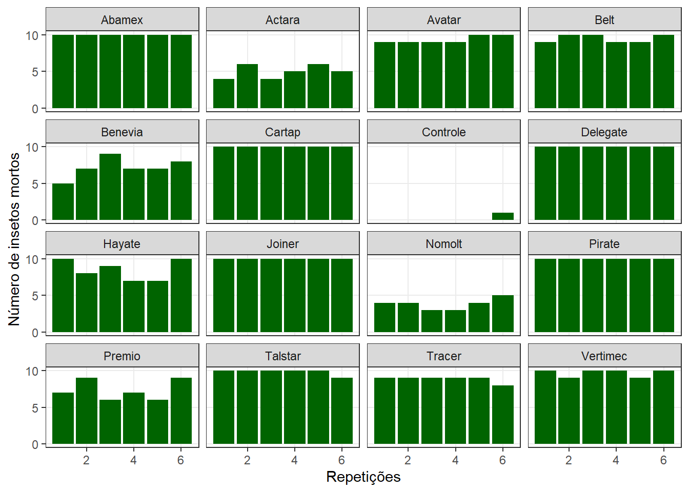
Mortalidade
A mortalidade é descrita como:
\(MT = M / T\)
MT = mortalidade
M = mortos
T = total
dados <- dados |>
mutate(
mortalidade = mortos / total)
media_mortalidade <- dados |>
group_by(tratamento) |>
summarise(
mortalidade_media = mean(mortalidade, na.rm = TRUE),
.groups = "drop")
mortalidade_controle <- media_mortalidade |>
filter(grepl("controle", tolower(tratamento))) |>
pull(mortalidade_media)
print(mortalidade_controle)[1] 0.01666667print(media_mortalidade)# A tibble: 16 × 2
tratamento mortalidade_media
<chr> <dbl>
1 abamex 1
2 actara 0.5
3 avatar 0.933
4 belt 0.95
5 benevia 0.717
6 cartap 1
7 controle 0.0167
8 delegate 1
9 hayate 0.85
10 joiner 1
11 nomolt 0.767
12 pirate 1
13 premio 0.733
14 talstar 0.983
15 tracer 0.883
16 vertimec 0.967 Análises estatísticas
Análise das pressuposições da ANOVA
Para que a ANOVA seja realizada é necessário que ela se enquandre nos seguintes pressupostos:
Normalidade dos resíduos
Homogeneidade de variâncias (homocedasticidade)
Aditividade do modelo
modelo_anova <- aov(mortalidade ~ tratamento, data = dados)
summary(modelo_anova) Df Sum Sq Mean Sq F value Pr(>F)
tratamento 15 6.070 0.4046 65.18 <2e-16 ***
Residuals 80 0.497 0.0062
---
Signif. codes: 0 '***' 0.001 '**' 0.01 '*' 0.05 '.' 0.1 ' ' 1Histograma dos resíduos: foi criado o histograma dos resíduos da ANOVA, criado com a função hist a partir do objeto modelo_anova, serve para visualizar a distribuição desses resíduos. Isso permite verificar se eles são aproximadamente normais, uma suposição fundamental para a validade dos resultados da ANOVA.
hist(residuals(modelo_anova))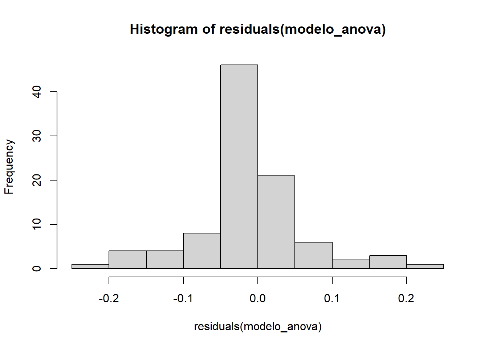
plot(simulateResiduals(modelo_anova))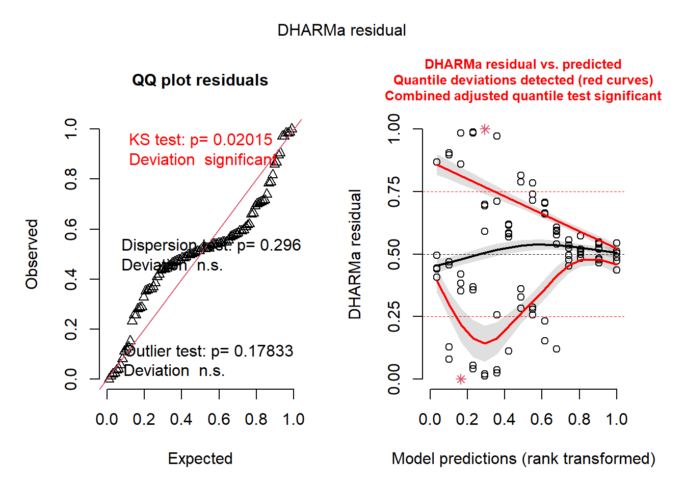
Normalidade dos resíduos: foi verificada pelo Shapiro teste, executado a partir da função shapiro.test a partir do objeto modelo_anova.
shapiro.test(residuals(modelo_anova))
Shapiro-Wilk normality test
data: residuals(modelo_anova)
W = 0.90715, p-value = 4.649e-06Como p-valor < 0.05, os resíduos não possuem normalidade.
Homogeneidade das variâncias: foi testada pelo teste de Levene, por meio da função leveneTest aplicada a mortalidade por tratamento.
car::leveneTest(mortalidade ~ tratamento, data = dados)Levene's Test for Homogeneity of Variance (center = median)
Df F value Pr(>F)
group 15 3.598 9.517e-05 ***
80
---
Signif. codes: 0 '***' 0.001 '**' 0.01 '*' 0.05 '.' 0.1 ' ' 1Como o p-valor < 0.05, as variâncias são heterogêneas.
Assim, observamos que os dados não atendem as pressuposições da ANOVA. Assim, se torna necessária a transformação dos dados ou a utilização de outros testes e modelos para a análise de dados. Com isso, apresentamos as duas formas de análise dos dados.
Transformação dos dados
Os dados foram transformados pela função anscombe = asin(sqrt(x)) (transformação angular (ou de Anscombe)). É uma transformação usada para dados de proporção
dados <- dados %>%
mutate(
anscombe = asin(sqrt((mortos + 3/8) / (total + 3/4)))
)
print(dados)# A tibble: 96 × 8
tratamento repetição tempo vivos mortos total mortalidade anscombe
<chr> <dbl> <dbl> <dbl> <dbl> <dbl> <dbl> <dbl>
1 abamex 1 48 0 10 10 1 1.38
2 abamex 2 48 0 10 10 1 1.38
3 abamex 3 48 0 10 10 1 1.38
4 abamex 4 48 0 10 10 1 1.38
5 abamex 5 48 0 10 10 1 1.38
6 abamex 6 48 0 10 10 1 1.38
7 actara 1 48 6 4 10 0.4 0.692
8 actara 2 48 4 6 10 0.6 0.879
9 actara 3 48 6 4 10 0.4 0.692
10 actara 4 48 5 5 10 0.5 0.785
# ℹ 86 more rowsAplicando a ANOVA novamente
modelo_anova2 <- aov(anscombe ~ tratamento, data = dados)Histograma dos resíduos
hist(residuals(modelo_anova2))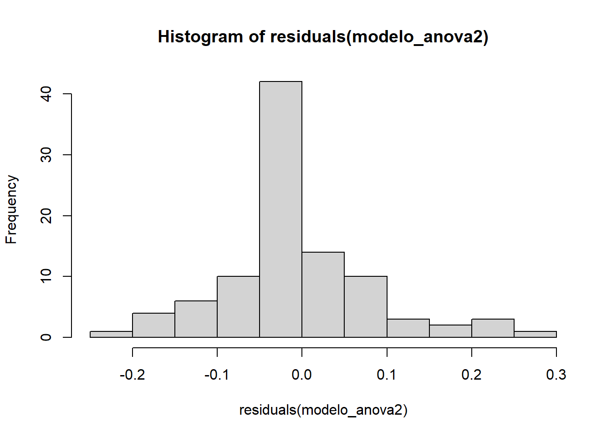
Normalidade dos resíduos
shapiro.test(residuals(modelo_anova2))
Shapiro-Wilk normality test
data: residuals(modelo_anova2)
W = 0.93441, p-value = 0.0001243Como o p-valor < 0.05, os resíduos não são normais.
Homogeneidade das variâncias
car::leveneTest(anscombe ~ tratamento, data = dados)Levene's Test for Homogeneity of Variance (center = median)
Df F value Pr(>F)
group 15 3.0498 0.0006496 ***
80
---
Signif. codes: 0 '***' 0.001 '**' 0.01 '*' 0.05 '.' 0.1 ' ' 1Como o p-valor < 0.05, as variâncias são heterogêneas.
Assim, observamos que a transformação dos dados não foi suficiente para que eles atendessem as pressuposições da ANOVA.
Teste de Kruskal-Wallis
O teste de Kruskal-Wallis é um teste não-paramétrico que verifica se há diferenças significativas entre os tratamentos analisados. Assim, ele foi aplicado aos dados de mortalidade.
kruskal.test(mortalidade ~ tratamento, data = dados)
Kruskal-Wallis rank sum test
data: mortalidade by tratamento
Kruskal-Wallis chi-squared = 77.032, df = 15, p-value = 2.427e-10Como p-valor < 0.05, há diferenças significativas na mortalidade entre os tratamentos.
Comparações múltiplas
Para realizar as comparações dos tratamentos foi realizado o teste de Dunn.
teste_dunn <- dunn.test(dados$mortalidade, dados$tratamento, method = "holm") Kruskal-Wallis rank sum test
data: x and group
Kruskal-Wallis chi-squared = 77.0316, df = 15, p-value = 0
Comparison of x by group
(Holm)
Col Mean-|
Row Mean | abamex actara avatar belt benevia cartap
---------+------------------------------------------------------------------
actara | 4.145820
| 0.0019*
|
avatar | 1.463230 -2.682589
| 1.0000 0.3141
|
belt | 1.097423 -3.048397 -0.365807
| 1.0000 0.1081 1.0000
|
benevia | 3.297811 -0.848008 1.834581 2.200388
| 0.0512 1.0000 1.0000 1.0000
|
cartap | 0.000000 -4.145820 -1.463230 -1.097423 -3.297811
| 1.0000 0.0019* 1.0000 1.0000 0.0507
|
controle | 4.622479 0.476658 3.159248 3.525056 1.324667 4.622479
| 0.0002* 1.0000 0.0751 0.0227* 1.0000 0.0002*
|
delegate | 0.000000 -4.145820 -1.463230 -1.097423 -3.297811 0.000000
| 1.0000 0.0019* 1.0000 1.0000 0.0502 1.0000
|
hayate | 2.023027 -2.122793 0.559796 0.925604 -1.274784 2.023027
| 1.0000 1.0000 1.0000 1.0000 1.0000 1.0000
|
joiner | 0.000000 -4.145820 -1.463230 -1.097423 -3.297811 0.000000
| 1.0000 0.0019* 1.0000 1.0000 0.0497 1.0000
|
nomolt | 2.810068 -1.335752 1.346837 1.712645 -0.487743 2.810068
| 0.2254 1.0000 1.0000 1.0000 1.0000 0.2229
|
pirate | 0.000000 -4.145820 -1.463230 -1.097423 -3.297811 0.000000
| 1.0000 0.0019* 1.0000 1.0000 0.0492 1.0000
|
premio | 3.181418 -0.964402 1.718187 2.083995 -0.116393 3.181418
| 0.0733 1.0000 1.0000 1.0000 1.0000 0.0725
|
talstar | 0.365807 -3.780012 -1.097423 -0.731615 -2.932004 0.365807
| 1.0000 0.0085* 1.0000 1.0000 0.1566 1.0000
|
tracer | 2.333409 -1.812410 0.870178 1.235986 -0.964402 2.333409
| 0.7949 1.0000 1.0000 1.0000 1.0000 0.7851
|
vertimec | 0.731615 -3.414205 -0.731615 -0.365807 -2.566196 0.731615
| 1.0000 0.0339 1.0000 1.0000 0.4318 1.0000
Col Mean-|
Row Mean | controle delegate hayate joiner nomolt pirate
---------+------------------------------------------------------------------
delegate | -4.622479
| 0.0002*
|
hayate | -2.599451 2.023027
| 0.3968 1.0000
|
joiner | -4.622479 0.000000 -2.023027
| 0.0002* 1.0000 1.0000
|
nomolt | -1.812410 2.810068 0.787040 2.810068
| 1.0000 0.2204 1.0000 0.2179
|
pirate | -4.622479 0.000000 -2.023027 0.000000 -2.810068
| 0.0002* 1.0000 1.0000 0.5000 0.2155
|
premio | -1.441060 3.181418 1.158391 3.181418 0.371350 3.181418
| 1.0000 0.0718 1.0000 0.0711 1.0000 0.0703
|
talstar | -4.256671 0.365807 -1.657219 0.365807 -2.444260 0.365807
| 0.0012* 1.0000 1.0000 1.0000 0.5951 1.0000
|
tracer | -2.289069 2.333409 0.310382 2.333409 -0.476658 2.333409
| 0.8389 0.7753 1.0000 0.7654 1.0000 0.7556
|
vertimec | -3.890863 0.731615 -1.291412 0.731615 -2.078452 0.731615
| 0.0054* 1.0000 1.0000 1.0000 1.0000 1.0000
Col Mean-|
Row Mean | premio talstar tracer
---------+---------------------------------
talstar | -2.815610
| 0.2239
|
tracer | -0.848008 1.967602
| 1.0000 1.0000
|
vertimec | -2.449803 0.365807 -1.601794
| 0.5932 1.0000 1.0000
alpha = 0.05
Reject Ho if p <= alpha/2comparacoes <- teste_dunn$comparisons
pvals <- teste_dunn$P.adjusted
grupos <- unique(as.character(dados$tratamento))
matriz_p <- matrix(1, nrow = length(grupos), ncol = length(grupos),
dimnames = list(grupos, grupos))
for (i in seq_along(comparacoes)) {
par <- unlist(strsplit(comparacoes[i], " - "))
matriz_p[par[1], par[2]] <- pvals[i]
matriz_p[par[2], par[1]] <- pvals[i]
}
letras <- multcompLetters(matriz_p)$Letters
letras_df <- data.frame(tratamento = names(letras), letra = letras)
summary_ic <- dados %>%
group_by(tratamento) %>%
summarise(
media = mean(mortalidade, na.rm = TRUE),
n = n(),
sd = sd(mortalidade, na.rm = TRUE),
se = sd / sqrt(n),
ic = qt(0.975, df = n - 1) * se
)
plot_df <- summary_ic %>%
left_join(letras_df, by = "tratamento") %>%
mutate(tratamento = str_to_title(tratamento))
ggplot(plot_df, aes(x = tratamento, y = media)) +
geom_errorbar(aes(ymin = media - ic, ymax = media + ic), width = 0.2) +
geom_point(size = 3) +
geom_text(aes(label = letra, y = media + ic + 0.03), size = 5) +
labs(
title = "Mortalidade por tratamento (Teste de Dunn)",
x = "Tratamento",
y = "Mortalidade"
) +
theme_minimal() +
theme(
legend.position = "none",
axis.text.x = element_text(angle = 45, hjust = 1)
)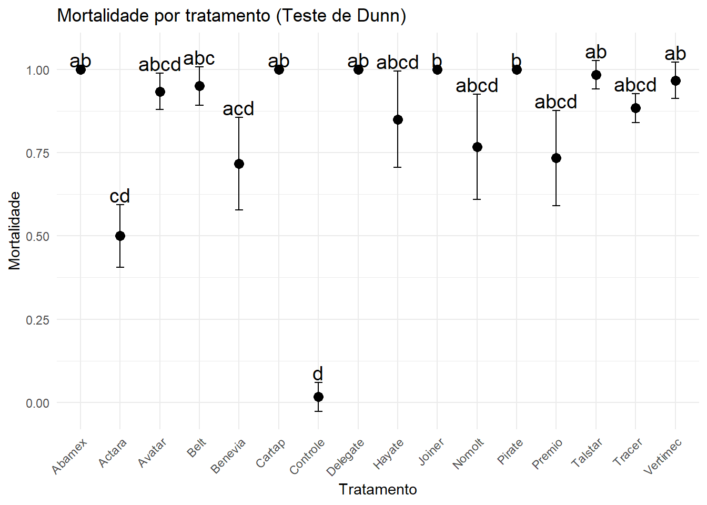
Modelos alternativos
Uma forma de analisar os dados sem transformação é a utilização de modelos que não exigem características semelhantes a da ANOVA. Dentre eles pode ser utilizado o GLM e GLMM.
Ajuste dos dados
Como possuimos dados com valores de 0 ou 100% (ou seja, tudo morto ou tudo vivo), o modelo encontra problemas. Assim, os dados foram ajustado adicionando 0.5 ao número de mortos e vivos. A função cbind foi utilizada, pois estamos tratando de contagem de eventos (morto x vivo).
dados$tratamento <- as.factor(dados$tratamento)
dados_ajustados <- dados |>
dplyr::filter(mortos + vivos > 0) |>
dplyr::mutate(
mortos_ajustados = mortos + 0.5,
vivos_ajustados = vivos + 0.5,
resposta_binomial = cbind(mortos_ajustados, vivos_ajustados))GLM - Modelo linear generalizado
Inicialmente, foi testado o modelo com distribuição binomial. Esse modelo é indicado quando os dados são proporcionais (insetos mortos / vivos). Com isso, é possível verificar se há diferença significativa entre os inseticidas testados quanto à mortalidade dos insetos. O argumento family = binomial foi utilizada por ter apenas dois resultados possíveis (sucesso ou fracasso). O link logit foi utilizado por se tratar de dados de proporção.
modelo_glm <- glm(resposta_binomial ~ tratamento,
family = binomial(link = "logit"),
data = dados_ajustados)
summary(modelo_glm)
Call:
glm(formula = resposta_binomial ~ tratamento, family = binomial(link = "logit"),
data = dados_ajustados)
Coefficients:
Estimate Std. Error z value Pr(>|z|)
(Intercept) 3.045e+00 5.909e-01 5.152 2.58e-07 ***
tratamentoactara -3.045e+00 6.402e-01 -4.756 1.98e-06 ***
tratamentoavatar -9.129e-01 7.134e-01 -1.280 0.200698
tratamentobelt -7.419e-01 7.297e-01 -1.017 0.309291
tratamentobenevia -2.212e+00 6.488e-01 -3.409 0.000652 ***
tratamentocartap -8.319e-15 8.357e-01 0.000 1.000000
tratamentocontrole -5.785e+00 7.844e-01 -7.375 1.64e-13 ***
tratamentodelegate -5.482e-15 8.357e-01 0.000 1.000000
tratamentohayate -1.540e+00 6.716e-01 -2.294 0.021808 *
tratamentojoiner -6.571e-15 8.357e-01 0.000 1.000000
tratamentonomolt -2.089e+00 6.983e-01 -2.991 0.002776 **
tratamentopirate -6.974e-15 8.357e-01 0.000 1.000000
tratamentopremio -2.139e+00 6.505e-01 -3.288 0.001008 **
tratamentotalstar -3.037e-01 7.844e-01 -0.387 0.698651
tratamentotracer -1.322e+00 6.834e-01 -1.934 0.053106 .
tratamentovertimec -5.431e-01 7.521e-01 -0.722 0.470209
---
Signif. codes: 0 '***' 0.001 '**' 0.01 '*' 0.05 '.' 0.1 ' ' 1
(Dispersion parameter for binomial family taken to be 1)
Null deviance: 331.240 on 95 degrees of freedom
Residual deviance: 26.177 on 80 degrees of freedom
AIC: 274.57
Number of Fisher Scoring iterations: 4anova_glm <- anova(modelo_glm, data = dados_ajustados)
print(anova_glm)Analysis of Deviance Table
Model: binomial, link: logit
Response: resposta_binomial
Terms added sequentially (first to last)
Df Deviance Resid. Df Resid. Dev Pr(>Chi)
NULL 95 331.24
tratamento 15 305.06 80 26.18 < 2.2e-16 ***
---
Signif. codes: 0 '***' 0.001 '**' 0.01 '*' 0.05 '.' 0.1 ' ' 1plot(simulateResiduals(modelo_glm))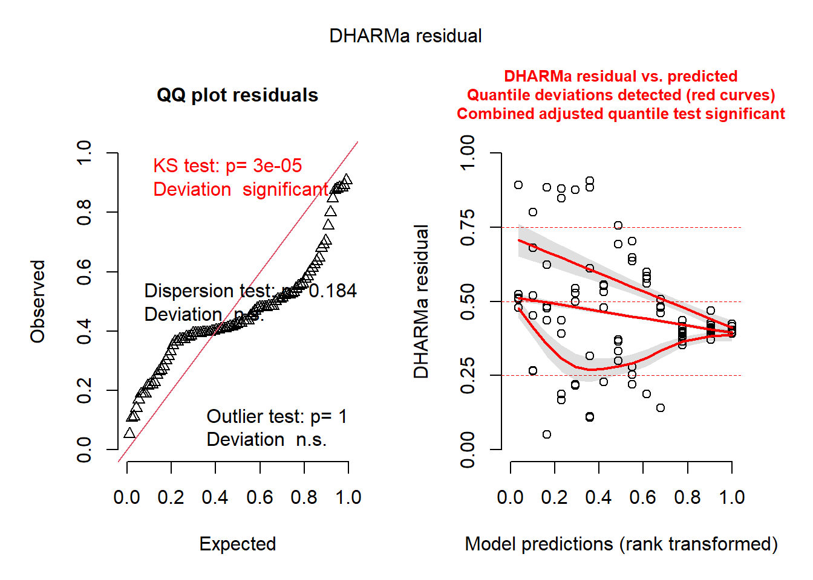
qqnorm(residuals(modelo_glm))
qqline(residuals(modelo_glm))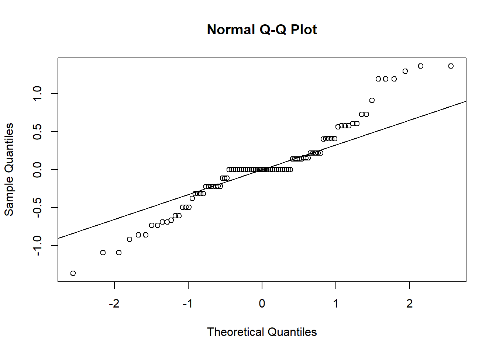
res_dev_binomial <- sum(residuals(modelo_glm, type = "deviance")^2)
df_binomial <- df.residual(modelo_glm)
dispersion_param_binomial <- res_dev_binomial / df_binomial
print(dispersion_param_binomial)[1] 0.3272128A análise do Modelo Linear Generalizado (GLM) com família binomial revelou um parâmetro de dispersão residual de 0.3272128. Este valor, que é menor que 1, indicando a presença de subdispersão nos dados. Embora o teste de dispersão do DHARMa não tenha sido estatisticamente significativo (p = 0.184), a magnitude do parâmetro estimado (0.327) sugere que a variabilidade observada é consideravelmente menor do que a esperada sob a distribuição binomial padrão. Assim, a family foi ajustada para quasibinomial.
Distribuição quasibinomial: o modelo GLM foi ajustado usando o argumento family = quasibinomial. Ele permite que o parâmetro de dispersão dos dados seja estimado, corrigindo os erros padrão e os testes de significância.
modelo_glm_qb <- glm(resposta_binomial ~ tratamento,
family = quasibinomial(link = "logit"),
data = dados_ajustados)
summary(modelo_glm_qb)
Call:
glm(formula = resposta_binomial ~ tratamento, family = quasibinomial(link = "logit"),
data = dados_ajustados)
Coefficients:
Estimate Std. Error t value Pr(>|t|)
(Intercept) 3.045e+00 3.334e-01 9.132 4.84e-14 ***
tratamentoactara -3.045e+00 3.612e-01 -8.430 1.16e-12 ***
tratamentoavatar -9.129e-01 4.025e-01 -2.268 0.026029 *
tratamentobelt -7.419e-01 4.117e-01 -1.802 0.075304 .
tratamentobenevia -2.212e+00 3.660e-01 -6.042 4.57e-08 ***
tratamentocartap -8.319e-15 4.715e-01 0.000 1.000000
tratamentocontrole -5.785e+00 4.426e-01 -13.072 < 2e-16 ***
tratamentodelegate -5.482e-15 4.715e-01 0.000 1.000000
tratamentohayate -1.540e+00 3.789e-01 -4.065 0.000111 ***
tratamentojoiner -6.571e-15 4.715e-01 0.000 1.000000
tratamentonomolt -2.089e+00 3.940e-01 -5.302 9.91e-07 ***
tratamentopirate -6.974e-15 4.715e-01 0.000 1.000000
tratamentopremio -2.139e+00 3.670e-01 -5.828 1.13e-07 ***
tratamentotalstar -3.037e-01 4.426e-01 -0.686 0.494580
tratamentotracer -1.322e+00 3.856e-01 -3.428 0.000963 ***
tratamentovertimec -5.431e-01 4.243e-01 -1.280 0.204264
---
Signif. codes: 0 '***' 0.001 '**' 0.01 '*' 0.05 '.' 0.1 ' ' 1
(Dispersion parameter for quasibinomial family taken to be 0.3183159)
Null deviance: 331.240 on 95 degrees of freedom
Residual deviance: 26.177 on 80 degrees of freedom
AIC: NA
Number of Fisher Scoring iterations: 4m <- emmeans(modelo_glm_qb, ~ tratamento, type = "response")
print(m) tratamento prob SE df asymp.LCL asymp.UCL
abamex 0.9545 0.0145 Inf 0.9161 0.976
actara 0.5000 0.0347 Inf 0.4324 0.568
avatar 0.8939 0.0214 Inf 0.8442 0.929
belt 0.9091 0.0200 Inf 0.8617 0.941
benevia 0.6970 0.0319 Inf 0.6311 0.756
cartap 0.9545 0.0145 Inf 0.9161 0.976
controle 0.0606 0.0166 Inf 0.0352 0.102
delegate 0.9545 0.0145 Inf 0.9161 0.976
hayate 0.8182 0.0268 Inf 0.7597 0.865
joiner 0.9545 0.0145 Inf 0.9161 0.976
nomolt 0.7222 0.0421 Inf 0.6328 0.797
pirate 0.9545 0.0145 Inf 0.9161 0.976
premio 0.7121 0.0314 Inf 0.6468 0.770
talstar 0.9394 0.0166 Inf 0.8976 0.965
tracer 0.8485 0.0249 Inf 0.7930 0.891
vertimec 0.9242 0.0184 Inf 0.8794 0.953
Confidence level used: 0.95
Intervals are back-transformed from the logit scale cld_results <- cld(m, adjust = "Tukey", Letters = LETTERS)
print(cld_results) tratamento prob SE df asymp.LCL asymp.UCL .group
controle 0.0606 0.0166 Inf 0.0266 0.132 A
actara 0.5000 0.0347 Inf 0.3990 0.601 B
benevia 0.6970 0.0319 Inf 0.5957 0.782 C
premio 0.7121 0.0314 Inf 0.6115 0.795 CD
nomolt 0.7222 0.0421 Inf 0.5834 0.828 CD
hayate 0.8182 0.0268 Inf 0.7258 0.884 CDE
tracer 0.8485 0.0249 Inf 0.7598 0.908 DEF
avatar 0.8939 0.0214 Inf 0.8126 0.942 EFG
belt 0.9091 0.0200 Inf 0.8307 0.953 EFG
vertimec 0.9242 0.0184 Inf 0.8491 0.964 EFG
talstar 0.9394 0.0166 Inf 0.8679 0.973 FG
cartap 0.9545 0.0145 Inf 0.8871 0.982 G
pirate 0.9545 0.0145 Inf 0.8871 0.982 G
delegate 0.9545 0.0145 Inf 0.8871 0.982 G
joiner 0.9545 0.0145 Inf 0.8871 0.982 G
abamex 0.9545 0.0145 Inf 0.8871 0.982 G
Confidence level used: 0.95
Conf-level adjustment: sidak method for 16 estimates
Intervals are back-transformed from the logit scale
P value adjustment: tukey method for comparing a family of 16 estimates
Tests are performed on the log odds ratio scale
significance level used: alpha = 0.05
NOTE: If two or more means share the same grouping symbol,
then we cannot show them to be different.
But we also did not show them to be the same. cld_df <- as.data.frame(cld_results) |>
dplyr::rename(group_sig = .group,
emmean = prob,
lower.CL = asymp.LCL,
upper.CL = asymp.UCL)
cld_df <- cld_df |>
mutate(tratamento = str_to_sentence(tratamento))
ggplot(cld_df, aes(x = reorder(tratamento, emmean), y = emmean, fill = group_sig)) +
geom_bar(stat = "identity", fill = "darkgreen", color = "black") +
geom_errorbar(aes(ymin = lower.CL, ymax = upper.CL), width = 0.2, position = position_dodge(0.9)) +
geom_text(aes(y = upper.CL, label = group_sig),
vjust = -0.5, size = 4, color = "black")+
labs(title = "Probabilidade estimada de resposta por tratamento (GLM Quasibinomial)",
x = "Tratamentos",
y = "Probabilidade estimada (EMM)") +
theme_classic() +
theme(plot.title = element_text(hjust = 0.5, face = "bold"),
axis.text.x = element_text(angle = 45, hjust = 1)) +
ylim(0, max(cld_df$upper.CL) * 1)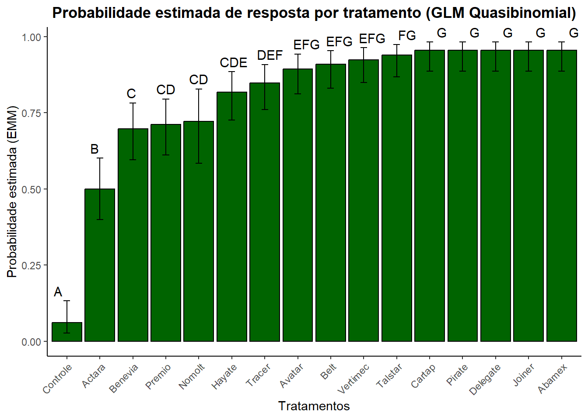
dispersion_param_quasibinomial <- summary(modelo_glm_qb)$dispersion
print(dispersion_param_quasibinomial)[1] 0.3183159O valor 0.3183159 indica que os dados têm menos variabilidade (subdispersão) do que o observado pelo modelo binomial simples. O modelo quasibinomial utiliza esse valor para ajustar os p-valores e erros padrão, tornando a análise mais precisa.
GLMM - Modelo linear generalizado misto
O GLMM é apropriado para os dados, porque a variável é binomial (mortos / vivos), tem um efeito fixo a ser testado (tratamentos) e possui efeitos aleatórios (repetições).
dados$repetição <- as.factor(dados$repetição)
dados$resposta_binomial <- cbind(dados$mortos, dados$vivos)
modelo_glmm <- glmer(resposta_binomial ~ tratamento + (1 | repetição),
family = binomial(link = "logit"),
data = dados_ajustados)
summary(modelo_glmm)Generalized linear mixed model fit by maximum likelihood (Laplace
Approximation) [glmerMod]
Family: binomial ( logit )
Formula: resposta_binomial ~ tratamento + (1 | repetição)
Data: dados_ajustados
AIC BIC logLik -2*log(L) df.resid
261.4 305.0 -113.7 227.4 79
Scaled residuals:
Min 1Q Median 3Q Max
-1.2917 -0.1526 0.5160 0.5299 2.3622
Random effects:
Groups Name Variance Std.Dev.
repetição (Intercept) 6.904e-05 0.008309
Number of obs: 96, groups: repetição, 6
Fixed effects:
Estimate Std. Error z value Pr(>|z|)
(Intercept) 2.6733 0.5009 5.337 9.43e-08 ***
tratamentoactara -2.7346 0.5581 -4.900 9.61e-07 ***
tratamentoavatar -0.3887 0.6569 -0.592 0.554011
tratamentobelt -0.3751 0.6584 -0.570 0.568923
tratamentobenevia -1.9130 0.5663 -3.378 0.000729 ***
tratamentocartap -0.3704 0.6590 -0.562 0.574026
tratamentocontrole -6.3354 0.9336 -6.786 1.15e-11 ***
tratamentodelegate -0.3598 0.6602 -0.545 0.585745
tratamentohayate -1.3913 0.5831 -2.386 0.017021 *
tratamentojoiner -0.3946 0.6562 -0.601 0.547622
tratamentonomolt -1.7774 0.6211 -2.862 0.004216 **
tratamentopirate -0.3672 0.6593 -0.557 0.577625
tratamentopremio -1.8524 0.5677 -3.263 0.001102 **
tratamentotalstar -0.4441 0.6508 -0.682 0.494997
tratamentotracer -0.6936 0.6269 -1.106 0.268522
tratamentovertimec -0.3731 0.6587 -0.566 0.571119
---
Signif. codes: 0 '***' 0.001 '**' 0.01 '*' 0.05 '.' 0.1 ' ' 1optimizer (Nelder_Mead) convergence code: 0 (OK)
Model failed to converge with max|grad| = 0.573179 (tol = 0.002, component 1)emm <- emmeans(modelo_glmm, ~ tratamento, type = "response")
letras <- cld(emm, adjust = "tukey", Letters = LETTERS)
print(letras) tratamento prob SE df asymp.LCL asymp.UCL .group
controle 0.025 0.0192 Inf 0.00251 0.208 A
actara 0.485 0.0615 Inf 0.31272 0.660 B
benevia 0.681 0.0574 Inf 0.49538 0.823 BC
premio 0.694 0.0567 Inf 0.50829 0.833 BC
nomolt 0.710 0.0756 Inf 0.45340 0.879 BC
hayate 0.783 0.0508 Inf 0.59916 0.897 C
tracer 0.879 0.0402 Inf 0.70443 0.957 C
talstar 0.903 0.0365 Inf 0.73186 0.969 C
joiner 0.907 0.0357 Inf 0.73667 0.971 C
avatar 0.908 0.0356 Inf 0.73723 0.972 C
belt 0.909 0.0354 Inf 0.73852 0.972 C
vertimec 0.909 0.0354 Inf 0.73871 0.972 C
cartap 0.909 0.0354 Inf 0.73896 0.972 C
pirate 0.909 0.0353 Inf 0.73926 0.973 C
delegate 0.910 0.0352 Inf 0.73994 0.973 C
abamex 0.935 0.0303 Inf 0.76797 0.984 C
Confidence level used: 0.95
Conf-level adjustment: sidak method for 16 estimates
Intervals are back-transformed from the logit scale
P value adjustment: tukey method for comparing a family of 16 estimates
Tests are performed on the log odds ratio scale
significance level used: alpha = 0.05
NOTE: If two or more means share the same grouping symbol,
then we cannot show them to be different.
But we also did not show them to be the same. letras <- letras |>
mutate(tratamento = str_to_sentence(tratamento))
ggplot(as.data.frame(letras), aes(x = reorder (tratamento, prob), y = prob)) +
geom_col(fill = "darkgreen", color = "black") +
geom_errorbar(aes(ymin = asymp.LCL, ymax = asymp.UCL), width = 0.2) +
geom_text(aes(y = asymp.UCL, label = .group),
vjust = -0.5, size = 4, color = "black") +
labs(title = "Proporção de insetos mortos por tratamento (GLMM)",
y = "Proporção estimada de mortos", x = "Tratamentos") +
theme_classic() +
theme(plot.title = element_text(hjust = 0.5, face = "bold"),
axis.text.x = element_text(angle = 45, hjust = 1)) +
ylim(0, max(cld_df$upper.CL) * 1.05)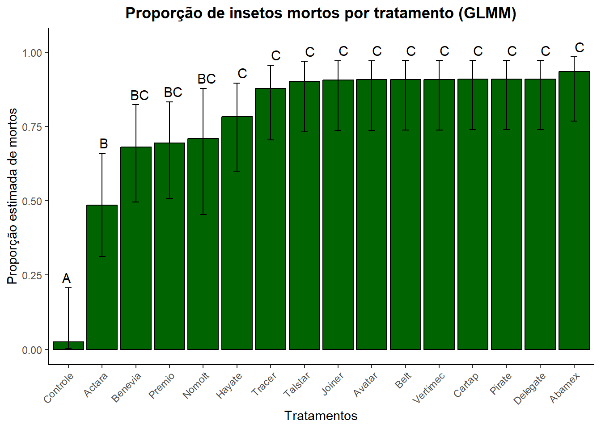
dispersion_param_glmm <- sum(residuals(modelo_glmm, type = "pearson")^2) / df.residual(modelo_glmm)
print(dispersion_param_glmm)[1] 0.4918094O modelo apresentou um parâmetro de dispersão de 0.4918094. Este valor, é inferior a 1, indicando claramente a presença de subdispersão nos dados, ou seja, a variabilidade observada é menor do que a esperada pela distribuição binomial padrão. Assim é necessário o ajuste do argumento.
Dispformula: o modelo GLMM foi ajustado utilizando o argumento dispformula = ~1, que permite estimar um um valor de dispersão diferente do padrão. Assim, ele permite inferências mais precisas.
dados_ajustados$mortos_ajustados <- ceiling(dados_ajustados$mortos_ajustados)
dados_ajustados$vivos_ajustados <- ceiling(dados_ajustados$vivos_ajustados)
modelo_glmm_disp <- glmmTMB(cbind(mortos_ajustados, vivos_ajustados) ~ tratamento + (1 | repetição),
family = binomial(link = "logit"),
data = dados_ajustados,
dispformula = ~1)
summary(modelo_glmm_disp) Family: binomial ( logit )
Formula: cbind(mortos_ajustados, vivos_ajustados) ~ tratamento + (1 |
repetição)
Data: dados_ajustados
AIC BIC logLik -2*log(L) df.resid
269.5 313.1 -117.7 235.5 79
Random effects:
Conditional model:
Groups Name Variance Std.Dev.
repetição (Intercept) 1.973e-10 1.405e-05
Number of obs: 96, groups: repetição, 6
Conditional model:
Estimate Std. Error z value Pr(>|z|)
(Intercept) 2.398e+00 4.264e-01 5.624 1.87e-08 ***
tratamentoactara -2.398e+00 4.872e-01 -4.922 8.58e-07 ***
tratamentoavatar -5.733e-01 5.458e-01 -1.050 0.293543
tratamentobelt -4.520e-01 5.557e-01 -0.813 0.416010
tratamentobenevia -1.642e+00 4.957e-01 -3.312 0.000927 ***
tratamentocartap -1.989e-05 6.030e-01 0.000 0.999974
tratamentocontrole -4.626e+00 5.831e-01 -7.933 2.13e-15 ***
tratamentodelegate 1.715e-05 6.030e-01 0.000 0.999977
tratamentohayate -1.063e+00 5.158e-01 -2.061 0.039327 *
tratamentojoiner -1.189e-06 6.030e-01 0.000 0.999998
tratamentonomolt -1.596e+00 5.415e-01 -2.947 0.003214 **
tratamentopirate 3.850e-06 6.030e-01 0.000 0.999995
tratamentopremio -1.577e+00 4.973e-01 -3.171 0.001518 **
tratamentotalstar -1.694e-01 5.831e-01 -0.291 0.771415
tratamentotracer -8.853e-01 5.251e-01 -1.686 0.091777 .
tratamentovertimec -3.185e-01 5.678e-01 -0.561 0.574924
---
Signif. codes: 0 '***' 0.001 '**' 0.01 '*' 0.05 '.' 0.1 ' ' 1overdisp_check <- performance::check_overdispersion(modelo_glmm_disp)
print(overdisp_check)# Overdispersion test
dispersion ratio = 0.863
p-value = 0.088emm <- emmeans(modelo_glmm_disp, ~ tratamento, type = "response")
print(emm) tratamento prob SE df asymp.LCL asymp.UCL
abamex 0.9167 0.0326 Inf 0.8267 0.962
actara 0.5000 0.0589 Inf 0.3865 0.613
avatar 0.8611 0.0408 Inf 0.7607 0.924
belt 0.8750 0.0390 Inf 0.7769 0.934
benevia 0.6806 0.0549 Inf 0.5649 0.778
cartap 0.9167 0.0326 Inf 0.8267 0.962
controle 0.0972 0.0349 Inf 0.0471 0.190
delegate 0.9167 0.0326 Inf 0.8267 0.962
hayate 0.7917 0.0479 Inf 0.6827 0.870
joiner 0.9167 0.0326 Inf 0.8267 0.962
nomolt 0.6905 0.0713 Inf 0.5370 0.811
pirate 0.9167 0.0326 Inf 0.8267 0.962
premio 0.6944 0.0543 Inf 0.5792 0.790
talstar 0.9028 0.0349 Inf 0.8098 0.953
tracer 0.8194 0.0453 Inf 0.7134 0.892
vertimec 0.8889 0.0370 Inf 0.7932 0.943
Confidence level used: 0.95
Intervals are back-transformed from the logit scale letras <- cld(emm, adjust = "tukey", Letters = LETTERS)
print(letras) tratamento prob SE df asymp.LCL asymp.UCL .group
controle 0.0972 0.0349 Inf 0.0323 0.258 A
actara 0.5000 0.0589 Inf 0.3330 0.667 B
benevia 0.6806 0.0549 Inf 0.5028 0.818 BC
nomolt 0.6905 0.0713 Inf 0.4547 0.856 BC
premio 0.6944 0.0543 Inf 0.5167 0.829 BC
hayate 0.7917 0.0479 Inf 0.6176 0.899 C
tracer 0.8194 0.0453 Inf 0.6478 0.918 C
avatar 0.8611 0.0408 Inf 0.6942 0.944 C
belt 0.8750 0.0390 Inf 0.7100 0.952 C
vertimec 0.8889 0.0370 Inf 0.7259 0.960 C
talstar 0.9028 0.0349 Inf 0.7419 0.968 C
cartap 0.9167 0.0326 Inf 0.7579 0.975 C
joiner 0.9167 0.0326 Inf 0.7579 0.975 C
abamex 0.9167 0.0326 Inf 0.7579 0.975 C
pirate 0.9167 0.0326 Inf 0.7579 0.975 C
delegate 0.9167 0.0326 Inf 0.7579 0.975 C
Confidence level used: 0.95
Conf-level adjustment: sidak method for 16 estimates
Intervals are back-transformed from the logit scale
P value adjustment: tukey method for comparing a family of 16 estimates
Tests are performed on the log odds ratio scale
significance level used: alpha = 0.05
NOTE: If two or more means share the same grouping symbol,
then we cannot show them to be different.
But we also did not show them to be the same. letras_df <- as.data.frame(letras) |>
dplyr::rename(group_sig = .group,
emmean = prob,
lower.CL = asymp.LCL,
upper.CL = asymp.UCL)
letras_df <- letras_df |>
mutate(
grupo = case_when(
tratamento == "Controle" ~ "Controle",
emmean < 0.3 ~ "Grupo Baixa Mortalidade",
emmean >= 0.3 & emmean < 0.6 ~ "Grupo Média Mortalidade",
emmean >= 0.6 ~ "Grupo Alta Mortalidade",
TRUE ~ "Outros"
)
)
letras_df <- letras_df |>
mutate(tratamento = str_to_sentence(tratamento))
graf_glmm <- ggplot(letras_df, aes(x = reorder(tratamento, emmean), y = emmean, fill = grupo)) +
geom_bar(stat = "identity", color = "black") +
geom_errorbar(aes(ymin = lower.CL, ymax = upper.CL), width = 0.2, position = position_dodge(0.9)) +
geom_text(aes(y = upper.CL, label = group_sig),
vjust = -0.5, size = 4, color = "black", fontface = "bold") +
labs(title = "Proporção de insetos mortos por tratamento (GLMM Binomial com dispersão)",
x = "Tratamentos",
y = "Proporção estimada de mortos",
fill = "Grupos de tratamento") +
theme_classic() +
theme(plot.title = element_text(hjust = 0.5, face = "bold"),
axis.text.x = element_text(angle = 45, hjust = 1, size = 9)) +
ylim(0, max(letras_df$upper.CL) * 1.05) +
coord_flip() +
scale_fill_manual(values = c(
"Controle" = "grey",
"Grupo Baixa Mortalidade" = "#99d594",
"Grupo Média Mortalidade" = "#67a9cf",
"Grupo Alta Mortalidade" = "#af8dc3",
"Outros" = "lightgrey"
))
print(graf_glmm)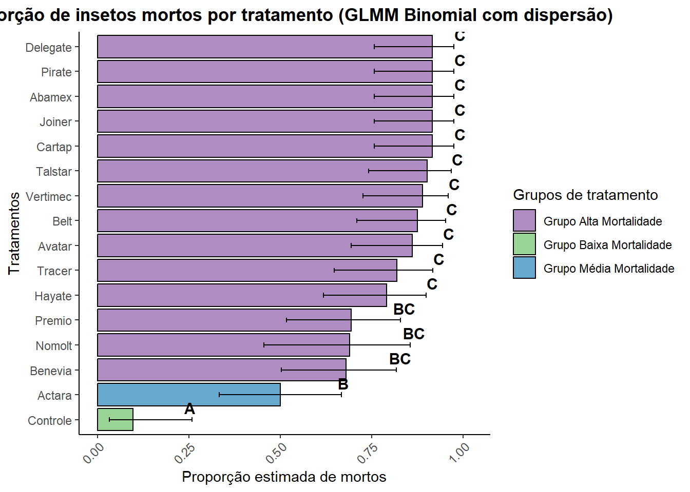
dispersion_param_modelado <- sigma(modelo_glmm_disp)
print(paste("Parâmetro de dispersão (sigma) para Binomial com dispformula:", dispersion_param_modelado))[1] "Parâmetro de dispersão (sigma) para Binomial com dispformula: 1"No modelo GLMM ajustado com glmmTMB e família binomial possui parâmetro de dispersão de 1. Isso indica que, ao considerar os efeitos fixos e aleatórios, a variabilidade em seus dados está perfeitamente alinhada com o que a distribuição binomial prevê. Portanto, não há superdispersão nem subdispersão residual, e as inferências (p-valores e erros padrão) do seu modelo são consideradas válidas e precisas.
Comparação dos modelos
Comparação do índice de dispersão
Foi realizada a comparação do modelo GLM com distribuição quasibinomial e o modelo GLMM binomial com dispformula. O índice de dispersão do GLM foi de 0.318, indicando subdispersão, ou seja, variação abaixo da esperada, o que pode comprometer a validade estatística dos testes. Já o GLMM apresentou índice de dispersão de 0.863, próximo de 1, o que indica um ajuste mais adequado à variância dos dados. Portanto, o GLMM com dispersão é mais adequado por fornecer estimativas mais robustas e realistas para a inferência dos efeitos dos tratamentos.
disp_glm <- sum(residuals(modelo_glm_qb, type = "pearson")^2) / df.residual(modelo_glm_qb)
disp_glmm <- check_overdispersion(modelo_glmm_disp)
cat("GLM quasibinomial - Índice de dispersão:", round(disp_glm, 3), "\n")GLM quasibinomial - Índice de dispersão: 0.318 cat("GLMM binomial - Índice de dispersão:", round(disp_glmm$dispersion_ratio, 3), "\n")GLMM binomial - Índice de dispersão: 0.863 Modelo selecionado
print(graf_glmm)
Curva de Probit
A Curva de Probit foi feita para os inseticidas abamex, avatar, benevia, delegate e joiner. A Curva de Probit é um modelo de regressão onde a reposta binária (morto / vivo) é transformada pela função probit para ajustar uma relação linear com a dose transformada em log. Comum para cálculo da CL50.
Abamex
dados_ab <- data.frame(
conc = c(25, 50, 5, 40, 10, 1),
total = c(60, 60, 60, 60, 60, 60),
mortos = c(36, 56, 17, 41, 27, 8)
)
dados_ab$mort_prop <- dados_ab$mortos / dados_ab$total
dados_ab$lconc <- log10(dados_ab$conc)
print("Dados Iniciais:")[1] "Dados Iniciais:"print(dados_ab) conc total mortos mort_prop lconc
1 25 60 36 0.6000000 1.39794
2 50 60 56 0.9333333 1.69897
3 5 60 17 0.2833333 0.69897
4 40 60 41 0.6833333 1.60206
5 10 60 27 0.4500000 1.00000
6 1 60 8 0.1333333 0.00000modelo_reg_ab <- lm(mort_prop ~ lconc, data = dados_ab)
print(anova(modelo_reg_ab))Analysis of Variance Table
Response: mort_prop
Df Sum Sq Mean Sq F value Pr(>F)
lconc 1 0.37296 0.37296 36.247 0.003834 **
Residuals 4 0.04116 0.01029
---
Signif. codes: 0 '***' 0.001 '**' 0.01 '*' 0.05 '.' 0.1 ' ' 1print(summary(modelo_reg_ab))
Call:
lm(formula = mort_prop ~ lconc, data = dados_ab)
Residuals:
1 2 3 4 5 6
-0.05453 0.15114 -0.07476 -0.05776 -0.03576 0.07167
Coefficients:
Estimate Std. Error t value Pr(>|t|)
(Intercept) 0.06166 0.08577 0.719 0.51197
lconc 0.42410 0.07044 6.021 0.00383 **
---
Signif. codes: 0 '***' 0.001 '**' 0.01 '*' 0.05 '.' 0.1 ' ' 1
Residual standard error: 0.1014 on 4 degrees of freedom
Multiple R-squared: 0.9006, Adjusted R-squared: 0.8758
F-statistic: 36.25 on 1 and 4 DF, p-value: 0.003834modelo_probit_ab <- glm(
cbind(mortos, total - mortos) ~ lconc,
data = dados_ab,
family = binomial(link = "probit")
)
print(summary(modelo_probit_ab))
Call:
glm(formula = cbind(mortos, total - mortos) ~ lconc, family = binomial(link = "probit"),
data = dados_ab)
Coefficients:
Estimate Std. Error z value Pr(>|z|)
(Intercept) -1.3277 0.1727 -7.69 1.47e-14 ***
lconc 1.2559 0.1391 9.03 < 2e-16 ***
---
Signif. codes: 0 '***' 0.001 '**' 0.01 '*' 0.05 '.' 0.1 ' ' 1
(Dispersion parameter for binomial family taken to be 1)
Null deviance: 112.489 on 5 degrees of freedom
Residual deviance: 13.834 on 4 degrees of freedom
AIC: 42.645
Number of Fisher Scoring iterations: 4pearson_chisq_ab <- sum(residuals(modelo_probit_ab, type = "pearson")^2)
df_chisq_ab <- nrow(dados_ab) - length(coef(modelo_probit_ab))
p_valor_chisq_ab <- pchisq(pearson_chisq_ab, df = df_chisq_ab, lower.tail = FALSE)
cat(paste("Estatística Qui-quadrado de Pearson:", round(pearson_chisq_ab, 4), "\n"))Estatística Qui-quadrado de Pearson: 12.0059 cat(paste("Graus de Liberdade (DF):", df_chisq_ab, "\n"))Graus de Liberdade (DF): 4 cat(paste("Pr > ChiSq (p-valor):", round(p_valor_chisq_ab, 4), "\n\n"))Pr > ChiSq (p-valor): 0.0173 probabilidades_ab <- c(
seq(from = 0.01, to = 0.10, by = 0.01),
seq(from = 0.15, to = 0.90, by = 0.05),
seq(from = 0.91, to = 0.99, by = 0.01)
)
cl_log_ab <- dose.p(modelo_probit_ab, p = probabilidades_ab)
erros_padrao_log_ab <- attr(cl_log_ab, "SE")
z_valor_ab <- qnorm(0.975)
limite_inf_log_ab <- cl_log_ab - z_valor_ab * erros_padrao_log_ab
limite_sup_log_ab <- cl_log_ab + z_valor_ab * erros_padrao_log_ab
tabela_escala_log10_ab <- data.frame(
Probabilidade = probabilidades_ab,
Log10_conc = cl_log_ab,
Limite_Inferior_95 = limite_inf_log_ab,
Limite_Superior_95 = limite_sup_log_ab
)
tabela_escala_conc_ab <- data.frame(
Probabilidade = probabilidades_ab,
Concentracao = 10^cl_log_ab,
Limite_Inferior_95 = 10^limite_inf_log_ab,
Limite_Superior_95 = 10^limite_sup_log_ab
)
options(digits = 6)
print(tabela_escala_log10_ab) Probabilidade Log10_conc Limite_Inferior_95 Limite_Superior_95
p = 0.01: 0.01 -0.7951538 -1.22739826 -0.362909326
p = 0.02: 0.02 -0.5780975 -0.96506165 -0.191133407
p = 0.03: 0.03 -0.4403823 -0.79886222 -0.081902361
p = 0.04: 0.04 -0.3367845 -0.67399734 0.000428382
p = 0.05: 0.05 -0.2525157 -0.57255226 0.067520960
p = 0.06: 0.06 -0.1807896 -0.48630846 0.124729171
p = 0.07: 0.07 -0.1179000 -0.41077828 0.174978340
p = 0.08: 0.08 -0.0615898 -0.34322997 0.220050443
p = 0.09: 0.09 -0.0103779 -0.28187131 0.261115540
p = 0.10: 0.10 0.0367627 -0.22545999 0.298985453
p = 0.15: 0.15 0.2319375 0.00720882 0.456666155
p = 0.20: 0.20 0.3870562 0.19070952 0.583402870
p = 0.25: 0.25 0.5201342 0.34662370 0.693644762
p = 0.30: 0.30 0.6396424 0.48490696 0.794377881
p = 0.35: 0.35 0.7503846 0.61098060 0.889788545
p = 0.40: 0.40 0.8554680 0.72809962 0.982836463
p = 0.45: 0.45 0.9571375 0.83836664 1.075908390
p = 0.50: 0.50 1.0571951 0.94328837 1.171101749
p = 0.55: 0.55 1.1572526 1.04417649 1.270328710
p = 0.60: 0.60 1.2589221 1.14247116 1.375372992
p = 0.65: 0.65 1.3640055 1.23996952 1.488041569
p = 0.70: 0.70 1.4747477 1.33897868 1.610516713
p = 0.75: 0.75 1.5942559 1.44253545 1.745976327
p = 0.80: 0.80 1.7273339 1.55497045 1.899697401
p = 0.85: 0.85 1.8824526 1.68342186 2.081483404
p = 0.90: 0.90 2.0776274 1.84247724 2.312777530
p = 0.91: 0.91 2.1247680 1.88059292 2.368943083
p = 0.92: 0.92 2.1759799 1.92189677 2.430062992
p = 0.93: 0.93 2.2322901 1.96720203 2.497378147
p = 0.94: 0.94 2.2951798 2.01768047 2.572679060
p = 0.95: 0.95 2.3669058 2.07511632 2.658695220
p = 0.96: 0.96 2.4511746 2.14243816 2.759911038
p = 0.97: 0.97 2.5547724 2.22500506 2.884539759
p = 0.98: 0.98 2.6924876 2.33448953 3.050485764
p = 0.99: 0.99 2.9095439 2.50656436 3.312523467print(tabela_escala_conc_ab) Probabilidade Concentracao Limite_Inferior_95 Limite_Superior_95
p = 0.01: 0.01 0.160268 0.0592382 0.433601
p = 0.02: 0.02 0.264182 0.1083773 0.643971
p = 0.03: 0.03 0.362759 0.1589051 0.828128
p = 0.04: 0.04 0.460485 0.2118374 1.000987
p = 0.05: 0.05 0.559093 0.2675764 1.168210
p = 0.06: 0.06 0.659493 0.3263560 1.332690
p = 0.07: 0.07 0.762255 0.3883486 1.496161
p = 0.08: 0.08 0.867781 0.4537013 1.659780
p = 0.09: 0.09 0.976387 0.5225510 1.824381
p = 0.10: 0.10 1.088335 0.5950316 1.990607
p = 0.15: 0.15 1.705837 1.0167374 2.861977
p = 0.20: 0.20 2.438126 1.5513490 3.831800
p = 0.25: 0.25 3.312335 2.2213843 4.939065
p = 0.30: 0.30 4.361566 3.0542668 6.228420
p = 0.35: 0.35 5.628395 4.0830115 7.758693
p = 0.40: 0.40 7.169156 5.3468700 9.612502
p = 0.45: 0.45 9.060194 6.8923392 11.909908
p = 0.50: 0.50 11.407620 8.7758334 14.828655
p = 0.55: 0.55 14.363246 11.0707360 18.634971
p = 0.60: 0.60 18.151899 13.8826112 23.734112
p = 0.65: 0.65 23.120943 17.3767889 30.763913
p = 0.70: 0.70 29.836488 21.8262276 40.786526
p = 0.75: 0.75 39.287635 27.7035515 55.715538
p = 0.80: 0.80 53.374513 35.8897514 79.377497
p = 0.85: 0.85 76.287368 48.2416175 120.637799
p = 0.90: 0.90 119.571420 69.5788491 205.483772
p = 0.91: 0.91 133.280927 75.9613937 233.853074
p = 0.92: 0.92 149.961537 83.5404427 269.192522
p = 0.93: 0.93 170.722235 92.7261068 314.324438
p = 0.94: 0.94 197.323933 104.1550825 373.834226
p = 0.95: 0.95 232.758619 118.8820601 455.716989
p = 0.96: 0.96 282.601588 138.8155627 575.322075
p = 0.97: 0.97 358.733892 167.8823573 766.548713
p = 0.98: 0.98 492.592334 216.0177976 1123.274149
p = 0.99: 0.99 811.977346 321.0438527 2053.635989lconc_grafico_ab <- data.frame(lconc = seq(0, max(dados_ab$lconc) + 0.1, length.out = 200))
predicoes_ab <- predict(modelo_probit_ab, newdata = lconc_grafico_ab, type = "link", se.fit = TRUE)
z_valor_ab <- qnorm(0.975)
lconc_grafico_ab$prob_predita_ab <- pnorm(predicoes_ab$fit)
lconc_grafico_ab$prob_superior_ab <- pnorm(predicoes_ab$fit + z_valor_ab * predicoes_ab$se.fit)
lconc_grafico_ab$prob_inferior_ab <- pnorm(predicoes_ab$fit - z_valor_ab * predicoes_ab$se.fit)
lc50_log_ab <- as.numeric(dose.p(modelo_probit_ab, p = 0.50))
lc50_conc_ab <- 10^lc50_log_ab
x_lim_inferior_ab <- -1.5
x_lim_superior_ab <- 1
lconc_grafico_ab <- data.frame(lconc = seq(x_lim_inferior_ab, x_lim_superior_ab, length.out = 200))
predicoes_ab <- predict(modelo_probit_ab, newdata = lconc_grafico_ab, type = "link", se.fit = TRUE)
z_valor_ab <- qnorm(0.975)
lconc_grafico_ab$prob_predita_ab <- pnorm(predicoes_ab$fit)
lconc_grafico_ab$prob_superior_ab <- pnorm(predicoes_ab$fit + z_valor_ab * predicoes_ab$se.fit)
lconc_grafico_ab$prob_inferior <- pnorm(predicoes_ab$fit - z_valor_ab * predicoes_ab$se.fit)
grafico_probit_final_ab <- ggplot() +
geom_ribbon(data = lconc_grafico_ab,
aes(x = lconc, ymin = prob_inferior * 100, ymax = prob_superior_ab * 100),
fill = "skyblue", alpha = 0.5) +
geom_line(data = lconc_grafico_ab,
aes(x = lconc, y = prob_predita_ab * 100),
color = "blue", size = 1) +
geom_point(data = dados_ab,
aes(x = lconc, y = mort_prop * 100),
color = "red", size = 4) +
geom_hline(yintercept = 50, linetype = "dashed", color = "black", size = 0.7) +
geom_vline(xintercept = lc50_log_ab, linetype = "dashed", color = "black", size = 0.7) +
labs(
title = "Curva dose-resposta (Modelo Probit) - Abamex",
x = "Log10 (Concentração)",
y = "Mortalidade observada e prevista (%)"
) +
annotate("text",
x = lc50_log_ab,
y = 45,
label = paste("LC50 =", format(lc50_conc_ab, digits = 4)),
hjust = -0.1,
vjust = 1,
fontface = "bold",
color = "black") +
scale_y_continuous(limits = c(0, 100), breaks = seq(0, 100, 10), expand = c(0, 0)) +
scale_x_continuous(limits = c(x_lim_inferior_ab, x_lim_superior_ab), breaks = seq(-4, 1, 0.5)) +
theme_bw() +
theme(plot.title = element_text(hjust = 0.5, face = "bold"))
print(grafico_probit_final_ab)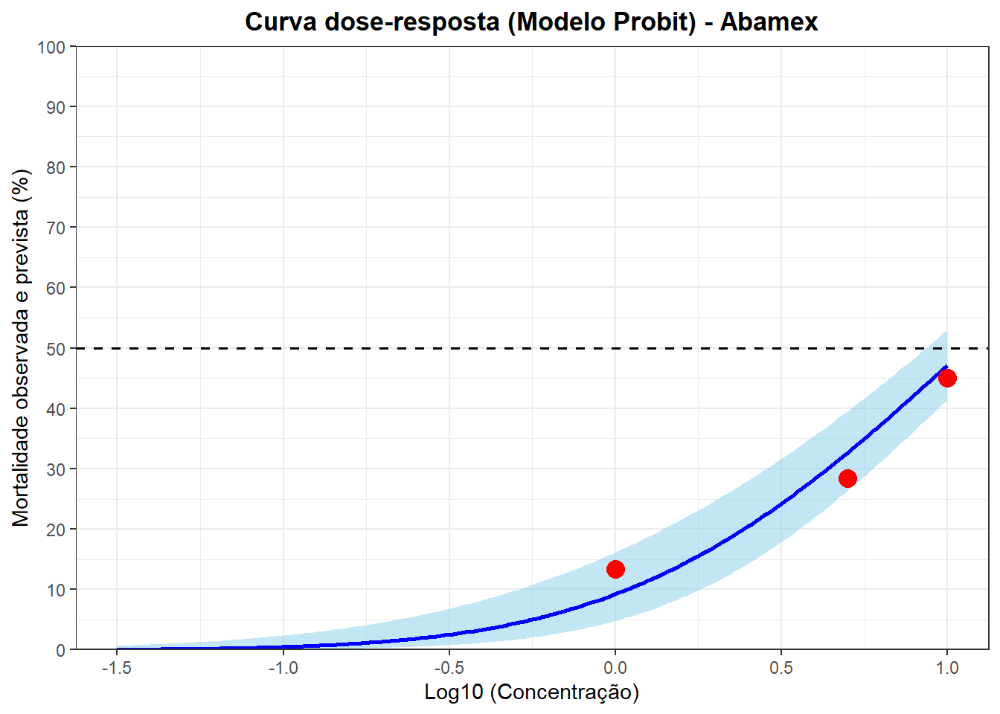
Avatar
dados_av <- data.frame(
conc = c(0.1, 1, 5, 10, 25, 40, 0.3, 0.5, 0.7),
total = c(60, 60, 60, 60, 60, 60, 60, 60, 60),
mortos = c(0, 4, 16, 1, 15, 14, 3, 8, 6)
)
dados_av$mort_prop_av <- dados_av$mortos / dados_av$total
dados_av$lconc_av <- log10(dados_av$conc)
print("Dados Iniciais:")[1] "Dados Iniciais:"print(dados_av) conc total mortos mort_prop_av lconc_av
1 0.1 60 0 0.0000000 -1.000000
2 1.0 60 4 0.0666667 0.000000
3 5.0 60 16 0.2666667 0.698970
4 10.0 60 1 0.0166667 1.000000
5 25.0 60 15 0.2500000 1.397940
6 40.0 60 14 0.2333333 1.602060
7 0.3 60 3 0.0500000 -0.522879
8 0.5 60 8 0.1333333 -0.301030
9 0.7 60 6 0.1000000 -0.154902modelo_reg_av <- lm(mort_prop_av ~ lconc_av, data = dados_av)
print(anova(modelo_reg_av))Analysis of Variance Table
Response: mort_prop_av
Df Sum Sq Mean Sq F value Pr(>F)
lconc_av 1 0.03911 0.03911 6.03 0.0438 *
Residuals 7 0.04540 0.00649
---
Signif. codes: 0 '***' 0.001 '**' 0.01 '*' 0.05 '.' 0.1 ' ' 1print(summary(modelo_reg_av))
Call:
lm(formula = mort_prop_av ~ lconc_av, data = dados_av)
Residuals:
Min 1Q Median 3Q Max
-0.16122 -0.02365 0.00902 0.04143 0.11200
Coefficients:
Estimate Std. Error t value Pr(>|t|)
(Intercept) 0.1008 0.0285 3.54 0.0095 **
lconc_av 0.0771 0.0314 2.46 0.0438 *
---
Signif. codes: 0 '***' 0.001 '**' 0.01 '*' 0.05 '.' 0.1 ' ' 1
Residual standard error: 0.0805 on 7 degrees of freedom
Multiple R-squared: 0.463, Adjusted R-squared: 0.386
F-statistic: 6.03 on 1 and 7 DF, p-value: 0.0438modelo_probit_av <- glm(
cbind(mortos, total - mortos) ~ lconc_av,
data = dados_av,
family = binomial(link = "probit")
)
print(summary(modelo_probit_av))
Call:
glm(formula = cbind(mortos, total - mortos) ~ lconc_av, family = binomial(link = "probit"),
data = dados_av)
Coefficients:
Estimate Std. Error z value Pr(>|z|)
(Intercept) -1.3420 0.0864 -15.54 < 2e-16 ***
lconc_av 0.3982 0.0858 4.64 3.4e-06 ***
---
Signif. codes: 0 '***' 0.001 '**' 0.01 '*' 0.05 '.' 0.1 ' ' 1
(Dispersion parameter for binomial family taken to be 1)
Null deviance: 53.183 on 8 degrees of freedom
Residual deviance: 30.874 on 7 degrees of freedom
AIC: 63.15
Number of Fisher Scoring iterations: 4pearson_chisq_av <- sum(residuals(modelo_probit_av, type = "pearson")^2)
df_chisq_av <- nrow(dados_av) - length(coef(modelo_probit_av))
p_valor_chisq_av <- pchisq(pearson_chisq_av, df = df_chisq_av, lower.tail = FALSE)
cat(paste("Estatística Qui-quadrado de Pearson:", round(pearson_chisq_av, 4), "\n"))Estatística Qui-quadrado de Pearson: 24.7946 cat(paste("Graus de Liberdade (DF):", df_chisq_av, "\n"))Graus de Liberdade (DF): 7 cat(paste("Pr > ChiSq (p-valor):", round(p_valor_chisq_av, 4), "\n\n"))Pr > ChiSq (p-valor): 8e-04 probabilidades_av <- c(
seq(from = 0.01, to = 0.10, by = 0.01),
seq(from = 0.15, to = 0.90, by = 0.05),
seq(from = 0.91, to = 0.99, by = 0.01)
)
cl_log_av <- dose.p(modelo_probit_av, p = probabilidades_av)
erros_padrao_log_av <- attr(cl_log_av, "SE")
z_valor_av <- qnorm(0.975)
limite_inf_log_av <- cl_log_av - z_valor_av * erros_padrao_log_av
limite_sup_log_av <- cl_log_av + z_valor_av * erros_padrao_log_av
tabela_escala_log10_av <- data.frame(
Probabilidade = probabilidades_av,
Log10_conc = cl_log_av,
Limite_Inferior_95 = limite_inf_log_av,
Limite_Superior_95 = limite_sup_log_av
)
tabela_escala_conc_av <- data.frame(
Probabilidade = probabilidades_av,
Concentracao = 10^cl_log_av,
Limite_Inferior_95 = 10^limite_inf_log_av,
Limite_Superior_95 = 10^limite_sup_log_av
)
options(digits = 6)
print(tabela_escala_log10_av) Probabilidade Log10_conc Limite_Inferior_95 Limite_Superior_95
p = 0.01: 0.01 -2.47191568 -3.801554 -1.1422769
p = 0.02: 0.02 -1.78732722 -2.841054 -0.7336000
p = 0.03: 0.03 -1.35297778 -2.235993 -0.4699627
p = 0.04: 0.04 -1.02623362 -1.784726 -0.2677412
p = 0.05: 0.05 -0.76045246 -1.421591 -0.0993141
p = 0.06: 0.06 -0.53423094 -1.116726 0.0482641
p = 0.07: 0.07 -0.33587892 -0.854099 0.1823410
p = 0.08: 0.08 -0.15827835 -0.624221 0.3076640
p = 0.09: 0.09 0.00324226 -0.421105 0.4275900
p = 0.10: 0.10 0.15192226 -0.240763 0.5446074
p = 0.15: 0.15 0.76749714 0.405663 1.1293311
p = 0.20: 0.20 1.25673655 0.799861 1.7136125
p = 0.25: 0.25 1.67646040 1.090396 2.2625246
p = 0.30: 0.30 2.05338538 1.333682 2.7730886
p = 0.35: 0.35 2.40266256 1.551269 3.2540557
p = 0.40: 0.40 2.73409244 1.753585 3.7146003
p = 0.45: 0.45 3.05475469 1.946831 4.1626785
p = 0.50: 0.50 3.37033296 2.135362 4.6053037
p = 0.55: 0.55 3.68591122 2.322716 5.0491063
p = 0.60: 0.60 4.00657347 2.512194 5.5009526
p = 0.65: 0.65 4.33800335 2.707318 5.9686887
p = 0.70: 0.70 4.68728053 2.912343 6.4622180
p = 0.75: 0.75 5.06420551 3.133058 6.9953534
p = 0.80: 0.80 5.48392936 3.378323 7.5895356
p = 0.85: 0.85 5.97316877 3.663688 8.2826493
p = 0.90: 0.90 6.58874366 4.022142 9.1553451
p = 0.91: 0.91 6.73742365 4.108639 9.3662080
p = 0.92: 0.92 6.89894426 4.202576 9.5953122
p = 0.93: 0.93 7.07654484 4.305831 9.8472583
p = 0.94: 0.94 7.27489685 4.421112 10.1286812
p = 0.95: 0.95 7.50111837 4.552546 10.4496909
p = 0.96: 0.96 7.76689954 4.706907 10.8268919
p = 0.97: 0.97 8.09364370 4.896601 11.2906866
p = 0.98: 0.98 8.52799313 5.148655 11.9073310
p = 0.99: 0.99 9.21258160 5.545711 12.8794519print(tabela_escala_conc_av) Probabilidade Concentracao Limite_Inferior_95 Limite_Superior_95
p = 0.01: 0.01 3.37353e-03 1.57923e-04 7.20648e-02
p = 0.02: 0.02 1.63182e-02 1.44193e-03 1.84672e-01
p = 0.03: 0.03 4.43631e-02 5.80774e-03 3.38873e-01
p = 0.04: 0.04 9.41383e-02 1.64163e-02 5.39832e-01
p = 0.05: 0.05 1.73599e-01 3.78799e-02 7.95584e-01
p = 0.06: 0.06 2.92260e-01 7.64318e-02 1.11754e+00
p = 0.07: 0.07 4.61446e-01 1.39927e-01 1.52174e+00
p = 0.08: 0.08 6.94579e-01 2.37563e-01 2.03079e+00
p = 0.09: 0.09 1.00749e+00 3.79223e-01 2.67664e+00
p = 0.10: 0.10 1.41880e+00 5.74430e-01 3.50435e+00
p = 0.15: 0.15 5.85460e+00 2.54486e+00 1.34689e+01
p = 0.20: 0.20 1.80608e+01 6.30755e+00 5.17145e+01
p = 0.25: 0.25 4.74745e+01 1.23139e+01 1.83031e+02
p = 0.30: 0.30 1.13080e+02 2.15617e+01 5.93046e+02
p = 0.35: 0.35 2.52733e+02 3.55852e+01 1.79496e+03
p = 0.40: 0.40 5.42116e+02 5.67002e+01 5.18323e+03
p = 0.45: 0.45 1.13437e+03 8.84771e+01 1.45438e+04
p = 0.50: 0.50 2.34603e+03 1.36572e+02 4.02999e+04
p = 0.55: 0.55 4.85189e+03 2.10240e+02 1.11971e+05
p = 0.60: 0.60 1.01525e+04 3.25233e+02 3.16922e+05
p = 0.65: 0.65 2.17773e+04 5.09704e+02 9.30441e+05
p = 0.70: 0.70 4.86721e+04 8.17228e+02 2.89880e+06
p = 0.75: 0.75 1.15933e+05 1.35849e+03 9.89358e+06
p = 0.80: 0.80 3.04740e+05 2.38959e+03 3.88629e+07
p = 0.85: 0.85 9.40089e+05 4.60987e+03 1.91712e+08
p = 0.90: 0.90 3.87921e+06 1.05231e+04 1.43003e+09
p = 0.91: 0.91 5.46290e+06 1.28422e+04 2.32385e+09
p = 0.92: 0.92 7.92400e+06 1.59432e+04 3.93833e+09
p = 0.93: 0.93 1.19274e+07 2.02223e+04 7.03491e+09
p = 0.94: 0.94 1.88320e+07 2.63701e+04 1.34487e+10
p = 0.95: 0.95 3.17043e+07 3.56899e+04 2.81638e+10
p = 0.96: 0.96 5.84655e+07 5.09222e+04 6.71262e+10
p = 0.97: 0.97 1.24063e+08 7.88135e+04 1.95293e+11
p = 0.98: 0.98 3.37282e+08 1.40817e+05 8.07850e+11
p = 0.99: 0.99 1.63148e+09 3.51327e+05 7.57621e+12lconc_grafico_av <- data.frame(lconc_av = seq(0, max(dados_av$lconc_av) + 0.1, length.out = 200))
predicoes_av <- predict(modelo_probit_av, newdata = lconc_grafico_av, type = "link", se.fit = TRUE)
z_valor_av <- qnorm(0.975)
lconc_grafico_av$prob_predita_av <- pnorm(predicoes_av$fit)
lconc_grafico_av$prob_superior_av <- pnorm(predicoes_av$fit + z_valor_av * predicoes_av$se.fit)
lconc_grafico_av$prob_inferior_ab <- pnorm(predicoes_av$fit - z_valor_av * predicoes_av$se.fit)
lc50_log_av <- as.numeric(dose.p(modelo_probit_av, p = 0.50))
lc50_conc_av <- 10^lc50_log_av
x_lim_inferior_av <- -1.5
x_lim_superior_av <- 1
lconc_grafico_av <- data.frame(lconc_av = seq(x_lim_inferior_av, x_lim_superior_av, length.out = 200))
predicoes_av <- predict(modelo_probit_av, newdata = lconc_grafico_av, type = "link", se.fit = TRUE)
z_valor_av <- qnorm(0.975)
lconc_grafico_av$prob_predita_av <- pnorm(predicoes_av$fit)
lconc_grafico_av$prob_superior_av <- pnorm(predicoes_av$fit + z_valor_av * predicoes_av$se.fit)
lconc_grafico_av$prob_inferior_av <- pnorm(predicoes_av$fit - z_valor_av * predicoes_av$se.fit)
grafico_probit_final_av <- ggplot() +
geom_ribbon(data = lconc_grafico_av,
aes(x = lconc_av, ymin = prob_inferior_av * 100, ymax = prob_superior_av * 100),
fill = "skyblue", alpha = 0.5) +
geom_line(data = lconc_grafico_av,
aes(x = lconc_av, y = prob_predita_av * 100),
color = "blue", size = 1) +
geom_point(data = dados_av,
aes(x = lconc_av, y = mort_prop_av * 100),
color = "red", size = 4) +
geom_hline(yintercept = 50, linetype = "dashed", color = "black", size = 0.7) +
geom_vline(xintercept = lc50_log_av, linetype = "dashed", color = "black", size = 0.7) +
labs(
title = "Curva dose-resposta (Modelo Probit) - Avatar",
x = "Log10 (Concentração)",
y = "Mortalidade observada e prevista (%)"
) +
annotate("text",
x = lc50_log_av,
y = 45,
label = paste("LC50 =", format(lc50_conc_av, digits = 4)),
hjust = -0.1,
vjust = 1,
fontface = "bold",
color = "black") +
scale_y_continuous(limits = c(0, 100), breaks = seq(0, 100, 10), expand = c(0, 0)) +
scale_x_continuous(limits = c(x_lim_inferior_av, x_lim_superior_av), breaks = seq(-4, 1, 0.5)) +
theme_bw() +
theme(plot.title = element_text(hjust = 0.5, face = "bold"))
print(grafico_probit_final_av)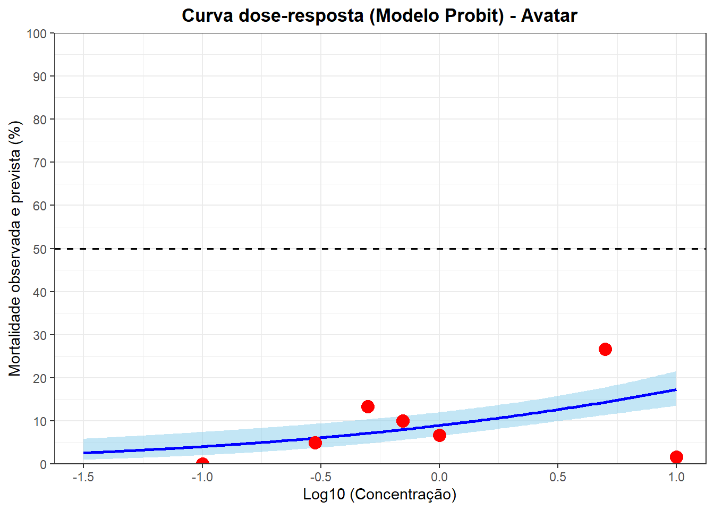
Benevia
dados_be <- data.frame(
conc = c(0.1, 1, 5, 10, 25, 40, 60),
total = c(60, 60, 60, 60, 60, 50, 50),
mortos = c(1, 2, 8, 5, 44, 6, 8)
)
dados_be$mort_prop_be <- dados_be$mortos / dados_be$total
dados_be$lconc_be <- log10(dados_be$conc)
print("Dados Iniciais:")[1] "Dados Iniciais:"print(dados_be) conc total mortos mort_prop_be lconc_be
1 0.1 60 1 0.0166667 -1.00000
2 1.0 60 2 0.0333333 0.00000
3 5.0 60 8 0.1333333 0.69897
4 10.0 60 5 0.0833333 1.00000
5 25.0 60 44 0.7333333 1.39794
6 40.0 50 6 0.1200000 1.60206
7 60.0 50 8 0.1600000 1.77815modelo_reg_be <- lm(mort_prop_be ~ lconc_be, data = dados_be)
print(anova(modelo_reg_be))Analysis of Variance Table
Response: mort_prop_be
Df Sum Sq Mean Sq F value Pr(>F)
lconc_be 1 0.07406 0.07406 1.252 0.314
Residuals 5 0.29577 0.05915 print(summary(modelo_reg_be))
Call:
lm(formula = mort_prop_be ~ lconc_be, data = dados_be)
Residuals:
1 2 3 4 5 6 7
0.0338 -0.0618 -0.0402 -0.1239 0.4814 -0.1548 -0.1346
Coefficients:
Estimate Std. Error t value Pr(>|t|)
(Intercept) 0.0951 0.1208 0.79 0.47
lconc_be 0.1122 0.1003 1.12 0.31
Residual standard error: 0.243 on 5 degrees of freedom
Multiple R-squared: 0.2, Adjusted R-squared: 0.0403
F-statistic: 1.25 on 1 and 5 DF, p-value: 0.314modelo_probit_be <- glm(
cbind(mortos, total - mortos) ~ lconc_be,
data = dados_be,
family = binomial(link = "probit")
)
print(summary(modelo_probit_be))
Call:
glm(formula = cbind(mortos, total - mortos) ~ lconc_be, family = binomial(link = "probit"),
data = dados_be)
Coefficients:
Estimate Std. Error z value Pr(>|z|)
(Intercept) -1.535 0.153 -10.03 <2e-16 ***
lconc_be 0.653 0.118 5.54 3e-08 ***
---
Signif. codes: 0 '***' 0.001 '**' 0.01 '*' 0.05 '.' 0.1 ' ' 1
(Dispersion parameter for binomial family taken to be 1)
Null deviance: 123.61 on 6 degrees of freedom
Residual deviance: 82.54 on 5 degrees of freedom
AIC: 109.9
Number of Fisher Scoring iterations: 4pearson_chisq_be <- sum(residuals(modelo_probit_be, type = "pearson")^2)
df_chisq_be <- nrow(dados_be) - length(coef(modelo_probit_be))
p_valor_chisq_be <- pchisq(pearson_chisq_be, df = df_chisq_be, lower.tail = FALSE)
cat(paste("Estatística Qui-quadrado de Pearson:", round(pearson_chisq_be, 4), "\n"))Estatística Qui-quadrado de Pearson: 88.801 cat(paste("Graus de Liberdade (DF):", df_chisq_be, "\n"))Graus de Liberdade (DF): 5 cat(paste("Pr > ChiSq (p-valor):", round(p_valor_chisq_be, 4), "\n\n"))Pr > ChiSq (p-valor): 0 probabilidades_be <- c(
seq(from = 0.01, to = 0.10, by = 0.01),
seq(from = 0.15, to = 0.90, by = 0.05),
seq(from = 0.91, to = 0.99, by = 0.01)
)
cl_log_be <- dose.p(modelo_probit_be, p = probabilidades_be)
erros_padrao_log_be <- attr(cl_log_be, "SE")
z_valor_be <- qnorm(0.975)
limite_inf_log_be <- cl_log_be - z_valor_be * erros_padrao_log_be
limite_sup_log_be <- cl_log_be + z_valor_be * erros_padrao_log_be
tabela_escala_log10_be <- data.frame(
Probabilidade = probabilidades_be,
Log10_conc = cl_log_be,
Limite_Inferior_95 = limite_inf_log_be,
Limite_Superior_95 = limite_sup_log_be
)
tabela_escala_conc_be <- data.frame(
Probabilidade = probabilidades_be,
Concentracao = 10^cl_log_be,
Limite_Inferior_95 = 10^limite_inf_log_be,
Limite_Superior_95 = 10^limite_sup_log_be
)
options(digits = 6)
print(tabela_escala_log10_be) Probabilidade Log10_conc Limite_Inferior_95 Limite_Superior_95
p = 0.01: 0.01 -1.2111644 -2.0676481 -0.3546806
p = 0.02: 0.02 -0.7940017 -1.5096138 -0.0783896
p = 0.03: 0.03 -0.5293253 -1.1571410 0.0984903
p = 0.04: 0.04 -0.3302196 -0.8932204 0.2327811
p = 0.05: 0.05 -0.1682625 -0.6796323 0.3431072
p = 0.06: 0.06 -0.0304116 -0.4988685 0.4380453
p = 0.07: 0.07 0.0904568 -0.3413933 0.5223069
p = 0.08: 0.08 0.1986799 -0.2014262 0.5987861
p = 0.09: 0.09 0.2971046 -0.0751984 0.6694075
p = 0.10: 0.10 0.3877046 0.0398793 0.7355299
p = 0.15: 0.15 0.7628130 0.4985345 1.0270915
p = 0.20: 0.20 1.0609372 0.8279282 1.2939463
p = 0.25: 0.25 1.3167013 1.0744930 1.5589095
p = 0.30: 0.30 1.5463853 1.2697424 1.8230282
p = 0.35: 0.35 1.7592218 1.4353964 2.0830472
p = 0.40: 0.40 1.9611828 1.5840611 2.3383045
p = 0.45: 0.45 2.1565824 1.7229089 2.5902559
p = 0.50: 0.50 2.3488840 1.8564217 2.8413463
p = 0.55: 0.55 2.5411856 1.9878208 3.0945505
p = 0.60: 0.60 2.7365852 2.1198163 3.3533542
p = 0.65: 0.65 2.9385462 2.2550843 3.6220082
p = 0.70: 0.70 3.1513827 2.3967012 3.9060642
p = 0.75: 0.75 3.3810668 2.5487306 4.2134029
p = 0.80: 0.80 3.6368308 2.7172984 4.5563632
p = 0.85: 0.85 3.9349550 2.9130737 4.9568364
p = 0.90: 0.90 4.3100634 3.1586175 5.4615093
p = 0.91: 0.91 4.4006635 3.2178217 5.5835052
p = 0.92: 0.92 4.4990881 3.2821013 5.7160749
p = 0.93: 0.93 4.6073113 3.3527384 5.8618841
p = 0.94: 0.94 4.7281796 3.4315819 6.0247773
p = 0.95: 0.95 4.8660305 3.5214484 6.2106126
p = 0.96: 0.96 5.0279877 3.6269631 6.4290122
p = 0.97: 0.97 5.2270934 3.7565926 6.6975941
p = 0.98: 0.98 5.4917697 3.9287841 7.0547553
p = 0.99: 0.99 5.9089324 4.1999355 7.6179293print(tabela_escala_conc_be) Probabilidade Concentracao Limite_Inferior_95 Limite_Superior_95
p = 0.01: 0.01 6.14944e-02 8.55760e-03 4.41895e-01
p = 0.02: 0.02 1.60694e-01 3.09304e-02 8.34854e-01
p = 0.03: 0.03 2.95580e-01 6.96400e-02 1.25456e+00
p = 0.04: 0.04 4.67499e-01 1.27873e-01 1.70915e+00
p = 0.05: 0.05 6.78793e-01 2.09107e-01 2.20347e+00
p = 0.06: 0.06 9.32370e-01 3.17053e-01 2.74186e+00
p = 0.07: 0.07 1.23156e+00 4.55624e-01 3.32895e+00
p = 0.08: 0.08 1.58008e+00 6.28889e-01 3.96996e+00
p = 0.09: 0.09 1.98200e+00 8.41011e-01 4.67097e+00
p = 0.10: 0.10 2.44177e+00 1.09617e+00 5.43914e+00
p = 0.15: 0.15 5.79179e+00 3.15162e+00 1.06437e+01
p = 0.20: 0.20 1.15063e+01 6.72865e+00 1.96764e+01
p = 0.25: 0.25 2.07349e+01 1.18712e+01 3.62168e+01
p = 0.30: 0.30 3.51872e+01 1.86098e+01 6.65316e+01
p = 0.35: 0.35 5.74410e+01 2.72519e+01 1.21073e+02
p = 0.40: 0.40 9.14498e+01 3.83761e+01 2.17924e+02
p = 0.45: 0.45 1.43411e+02 5.28334e+01 3.89274e+02
p = 0.50: 0.50 2.23298e+02 7.18492e+01 6.93979e+02
p = 0.55: 0.55 3.47685e+02 9.72346e+01 1.24323e+03
p = 0.60: 0.60 5.45237e+02 1.31770e+02 2.25608e+03
p = 0.65: 0.65 8.68053e+02 1.79922e+02 4.18801e+03
p = 0.70: 0.70 1.41704e+03 2.49288e+02 8.05498e+03
p = 0.75: 0.75 2.40473e+03 3.53778e+02 1.63457e+04
p = 0.80: 0.80 4.33342e+03 5.21553e+02 3.60050e+04
p = 0.85: 0.85 8.60905e+03 8.18604e+02 9.05391e+04
p = 0.90: 0.90 2.04204e+04 1.44085e+03 2.89407e+05
p = 0.91: 0.91 2.51573e+04 1.65128e+03 3.83270e+05
p = 0.92: 0.92 3.15564e+04 1.91470e+03 5.20086e+05
p = 0.93: 0.93 4.04866e+04 2.25288e+03 7.27586e+05
p = 0.94: 0.94 5.34785e+04 2.70136e+03 1.05871e+06
p = 0.95: 0.95 7.34566e+04 3.32237e+03 1.62410e+06
p = 0.96: 0.96 1.06657e+05 4.23607e+03 2.68542e+06
p = 0.97: 0.97 1.68692e+05 5.70943e+03 4.98418e+06
p = 0.98: 0.98 3.10291e+05 8.48758e+03 1.13437e+07
p = 0.99: 0.99 8.10835e+05 1.58466e+04 4.14886e+07lconc_grafico_be <- data.frame(lconc_be = seq(0, max(dados_be$lconc_be) + 0.1, length.out = 200))
predicoes_be <- predict(modelo_probit_be, newdata = lconc_grafico_be, type = "link", se.fit = TRUE)
z_valor_be <- qnorm(0.975)
lconc_grafico_be$prob_predita_be <- pnorm(predicoes_be$fit)
lconc_grafico_be$prob_superior_be <- pnorm(predicoes_be$fit + z_valor_be * predicoes_be$se.fit)
lconc_grafico_be$prob_inferior_be <- pnorm(predicoes_be$fit - z_valor_be * predicoes_be$se.fit)
lc50_log_be <- as.numeric(dose.p(modelo_probit_be, p = 0.50))
lc50_conc_be <- 10^lc50_log_be
x_lim_inferior_be <- -1.5
x_lim_superior_be <- 1
lconc_grafico_be <- data.frame(lconc_be = seq(x_lim_inferior_be, x_lim_superior_be, length.out = 200))
predicoes_be <- predict(modelo_probit_be, newdata = lconc_grafico_be, type = "link", se.fit = TRUE)
z_valor_be <- qnorm(0.975)
lconc_grafico_be$prob_predita_be <- pnorm(predicoes_be$fit)
lconc_grafico_be$prob_superior_be <- pnorm(predicoes_be$fit + z_valor_be * predicoes_be$se.fit)
lconc_grafico_be$prob_inferior_be <- pnorm(predicoes_be$fit - z_valor_be * predicoes_be$se.fit)
grafico_probit_final_be <- ggplot() +
geom_ribbon(data = lconc_grafico_be,
aes(x = lconc_be, ymin = prob_inferior_be * 100, ymax = prob_superior_be * 100),
fill = "skyblue", alpha = 0.5) +
geom_line(data = lconc_grafico_be,
aes(x = lconc_be, y = prob_predita_be * 100),
color = "blue", size = 1) +
geom_point(data = dados_be,
aes(x = lconc_be, y = mort_prop_be * 100),
color = "red", size = 4) +
geom_hline(yintercept = 50, linetype = "dashed", color = "black", size = 0.7) +
geom_vline(xintercept = lc50_log_be, linetype = "dashed", color = "black", size = 0.7) +
labs(
title = "Curva dose-resposta (Modelo Probit) - Benevia",
x = "Log10 (Concentração)",
y = "Mortalidade observada e prevista (%)"
) +
annotate("text",
x = lc50_log_be,
y = 45,
label = paste("LC50 =", format(lc50_conc_be, digits = 4)),
hjust = -0.1,
vjust = 1,
fontface = "bold",
color = "black") +
scale_y_continuous(limits = c(0, 100), breaks = seq(0, 100, 10), expand = c(0, 0)) +
scale_x_continuous(limits = c(x_lim_inferior_be, x_lim_superior_be), breaks = seq(-4, 1, 0.5)) +
theme_bw() +
theme(plot.title = element_text(hjust = 0.5, face = "bold"))
print(grafico_probit_final_be)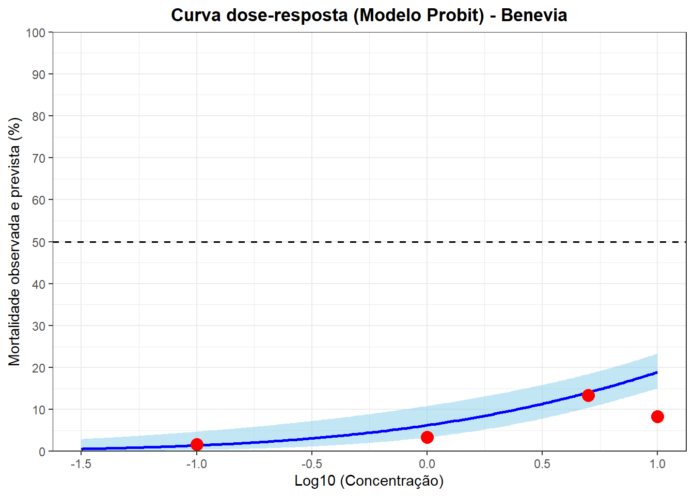
Delegate
dados_de <- data.frame(
conc = c(0.1, 1),
total = c(60, 60),
mortos = c(0,0)
)
dados_de$mort_prop_de <- dados_de$mortos / dados_de$total
dados_de$lconc_de <- log10(dados_de$conc)
print("Dados Iniciais:")[1] "Dados Iniciais:"print(dados_de) conc total mortos mort_prop_de lconc_de
1 0.1 60 0 0 -1
2 1.0 60 0 0 0modelo_reg_de <- lm(mort_prop_de ~ lconc_de, data = dados_de)
print(anova(modelo_reg_de))Analysis of Variance Table
Response: mort_prop_de
Df Sum Sq Mean Sq F value Pr(>F)
lconc_de 1 0 0 NaN NaN
Residuals 0 0 NaN print(summary(modelo_reg_de))
Call:
lm(formula = mort_prop_de ~ lconc_de, data = dados_de)
Residuals:
ALL 2 residuals are 0: no residual degrees of freedom!
Coefficients:
Estimate Std. Error t value Pr(>|t|)
(Intercept) 0 NaN NaN NaN
lconc_de 0 NaN NaN NaN
Residual standard error: NaN on 0 degrees of freedom
Multiple R-squared: NaN, Adjusted R-squared: NaN
F-statistic: NaN on 1 and 0 DF, p-value: NAmodelo_probit_de <- glm(
cbind(mortos, total - mortos) ~ lconc_de,
data = dados_de,
family = binomial(link = "probit")
)
print(summary(modelo_probit_de))
Call:
glm(formula = cbind(mortos, total - mortos) ~ lconc_de, family = binomial(link = "probit"),
data = dados_de)
Coefficients:
Estimate Std. Error z value Pr(>|z|)
(Intercept) -6.99e+00 9.44e+03 0 1
lconc_de 1.45e-15 1.33e+04 0 1
(Dispersion parameter for binomial family taken to be 1)
Null deviance: 0.0000e+00 on 1 degrees of freedom
Residual deviance: 3.3515e-10 on 0 degrees of freedom
AIC: 4
Number of Fisher Scoring iterations: 22pearson_chisq_de <- sum(residuals(modelo_probit_de, type = "pearson")^2)
df_chisq_de <- nrow(dados_de) - length(coef(modelo_probit_de))
p_valor_chisq_de <- pchisq(pearson_chisq_de, df = df_chisq_de, lower.tail = FALSE)
cat(paste("Estatística Qui-quadrado de Pearson:", round(pearson_chisq_de, 4), "\n"))Estatística Qui-quadrado de Pearson: 0 cat(paste("Graus de Liberdade (DF):", df_chisq_de, "\n"))Graus de Liberdade (DF): 0 cat(paste("Pr > ChiSq (p-valor):", round(p_valor_chisq_de, 4), "\n\n"))Pr > ChiSq (p-valor): 0 probabilidades_de <- c(
seq(from = 0.01, to = 0.10, by = 0.01),
seq(from = 0.15, to = 0.90, by = 0.05),
seq(from = 0.91, to = 0.99, by = 0.01)
)
cl_log_de <- dose.p(modelo_probit_de, p = probabilidades_de)
erros_padrao_log_de <- attr(cl_log_de, "SE")
z_valor_de <- qnorm(0.975)
limite_inf_log_de <- cl_log_de - z_valor_de * erros_padrao_log_de
limite_sup_log_de <- cl_log_de + z_valor_de * erros_padrao_log_de
tabela_escala_log10_de <- data.frame(
Probabilidade = probabilidades_de,
Log10_conc = cl_log_de,
Limite_Inferior_95 = limite_inf_log_de,
Limite_Superior_95 = limite_sup_log_de
)
tabela_escala_conc_de <- data.frame(
Probabilidade = probabilidades_de,
Concentracao = 10^cl_log_de,
Limite_Inferior_95 = 10^limite_inf_log_de,
Limite_Superior_95 = 10^limite_sup_log_de
)
options(digits = 6)
print(tabela_escala_log10_de) Probabilidade Log10_conc Limite_Inferior_95 Limite_Superior_95
p = 0.01: 0.01 3.22082e+15 -5.82243e+34 5.82243e+34
p = 0.02: 0.02 3.40917e+15 -6.16293e+34 6.16293e+34
p = 0.03: 0.03 3.52868e+15 -6.37896e+34 6.37896e+34
p = 0.04: 0.04 3.61858e+15 -6.54147e+34 6.54147e+34
p = 0.05: 0.05 3.69170e+15 -6.67366e+34 6.67366e+34
p = 0.06: 0.06 3.75394e+15 -6.78618e+34 6.78618e+34
p = 0.07: 0.07 3.80851e+15 -6.88483e+34 6.88483e+34
p = 0.08: 0.08 3.85738e+15 -6.97317e+34 6.97317e+34
p = 0.09: 0.09 3.90182e+15 -7.05350e+34 7.05350e+34
p = 0.10: 0.10 3.94272e+15 -7.12745e+34 7.12745e+34
p = 0.15: 0.15 4.11209e+15 -7.43362e+34 7.43362e+34
p = 0.20: 0.20 4.24669e+15 -7.67695e+34 7.67695e+34
p = 0.25: 0.25 4.36217e+15 -7.88571e+34 7.88571e+34
p = 0.30: 0.30 4.46588e+15 -8.07318e+34 8.07318e+34
p = 0.35: 0.35 4.56198e+15 -8.24690e+34 8.24690e+34
p = 0.40: 0.40 4.65316e+15 -8.41174e+34 8.41174e+34
p = 0.45: 0.45 4.74139e+15 -8.57123e+34 8.57123e+34
p = 0.50: 0.50 4.82821e+15 -8.72819e+34 8.72819e+34
p = 0.55: 0.55 4.91504e+15 -8.88515e+34 8.88515e+34
p = 0.60: 0.60 5.00326e+15 -9.04464e+34 9.04464e+34
p = 0.65: 0.65 5.09445e+15 -9.20948e+34 9.20948e+34
p = 0.70: 0.70 5.19055e+15 -9.38320e+34 9.38320e+34
p = 0.75: 0.75 5.29425e+15 -9.57067e+34 9.57067e+34
p = 0.80: 0.80 5.40973e+15 -9.77943e+34 9.77943e+34
p = 0.85: 0.85 5.54434e+15 -1.00228e+35 1.00228e+35
p = 0.90: 0.90 5.71370e+15 -1.03289e+35 1.03289e+35
p = 0.91: 0.91 5.75461e+15 -1.04029e+35 1.04029e+35
p = 0.92: 0.92 5.79905e+15 -1.04832e+35 1.04832e+35
p = 0.93: 0.93 5.84791e+15 -1.05715e+35 1.05715e+35
p = 0.94: 0.94 5.90249e+15 -1.06702e+35 1.06702e+35
p = 0.95: 0.95 5.96473e+15 -1.07827e+35 1.07827e+35
p = 0.96: 0.96 6.03785e+15 -1.09149e+35 1.09149e+35
p = 0.97: 0.97 6.12775e+15 -1.10774e+35 1.10774e+35
p = 0.98: 0.98 6.24725e+15 -1.12935e+35 1.12935e+35
p = 0.99: 0.99 6.43561e+15 -1.16340e+35 1.16340e+35print(tabela_escala_conc_de) Probabilidade Concentracao Limite_Inferior_95 Limite_Superior_95
p = 0.01: 0.01 Inf 0 Inf
p = 0.02: 0.02 Inf 0 Inf
p = 0.03: 0.03 Inf 0 Inf
p = 0.04: 0.04 Inf 0 Inf
p = 0.05: 0.05 Inf 0 Inf
p = 0.06: 0.06 Inf 0 Inf
p = 0.07: 0.07 Inf 0 Inf
p = 0.08: 0.08 Inf 0 Inf
p = 0.09: 0.09 Inf 0 Inf
p = 0.10: 0.10 Inf 0 Inf
p = 0.15: 0.15 Inf 0 Inf
p = 0.20: 0.20 Inf 0 Inf
p = 0.25: 0.25 Inf 0 Inf
p = 0.30: 0.30 Inf 0 Inf
p = 0.35: 0.35 Inf 0 Inf
p = 0.40: 0.40 Inf 0 Inf
p = 0.45: 0.45 Inf 0 Inf
p = 0.50: 0.50 Inf 0 Inf
p = 0.55: 0.55 Inf 0 Inf
p = 0.60: 0.60 Inf 0 Inf
p = 0.65: 0.65 Inf 0 Inf
p = 0.70: 0.70 Inf 0 Inf
p = 0.75: 0.75 Inf 0 Inf
p = 0.80: 0.80 Inf 0 Inf
p = 0.85: 0.85 Inf 0 Inf
p = 0.90: 0.90 Inf 0 Inf
p = 0.91: 0.91 Inf 0 Inf
p = 0.92: 0.92 Inf 0 Inf
p = 0.93: 0.93 Inf 0 Inf
p = 0.94: 0.94 Inf 0 Inf
p = 0.95: 0.95 Inf 0 Inf
p = 0.96: 0.96 Inf 0 Inf
p = 0.97: 0.97 Inf 0 Inf
p = 0.98: 0.98 Inf 0 Inf
p = 0.99: 0.99 Inf 0 Inflconc_grafico_de <- data.frame(lconc_de = seq(0, max(dados_de$lconc_de) + 0.1, length.out = 200))
predicoes_de <- predict(modelo_probit_de, newdata = lconc_grafico_de, type = "link", se.fit = TRUE)
z_valor_de <- qnorm(0.975)
lconc_grafico_de$prob_predita_de <- pnorm(predicoes_de$fit)
lconc_grafico_de$prob_superior_de <- pnorm(predicoes_de$fit + z_valor_de * predicoes_de$se.fit)
lconc_grafico_de$prob_inferior_de <- pnorm(predicoes_de$fit - z_valor_de * predicoes_de$se.fit)
lc50_log_de <- as.numeric(dose.p(modelo_probit_de, p = 0.50))
lc50_conc_de <- 10^lc50_log_de
x_lim_inferior_de <- -1.5
x_lim_superior_de <- 1
lconc_grafico_de <- data.frame(lconc_de = seq(x_lim_inferior_de, x_lim_superior_de, length.out = 200))
predicoes_de <- predict(modelo_probit_de, newdata = lconc_grafico_de, type = "link", se.fit = TRUE)
z_valor_de <- qnorm(0.975)
lconc_grafico_de$prob_predita_de <- pnorm(predicoes_de$fit)
lconc_grafico_de$prob_superior_de <- pnorm(predicoes_de$fit + z_valor_de * predicoes_de$se.fit)
lconc_grafico_de$prob_inferior_de <- pnorm(predicoes_de$fit - z_valor_de * predicoes_de$se.fit)
grafico_probit_final_de <- ggplot() +
geom_ribbon(data = lconc_grafico_de,
aes(x = lconc_de, ymin = prob_inferior_de * 100, ymax = prob_superior_de * 100),
fill = "skyblue", alpha = 0.5) +
geom_line(data = lconc_grafico_de,
aes(x = lconc_de, y = prob_predita_de * 100),
color = "blue", size = 1) +
geom_point(data = dados_de,
aes(x = lconc_de, y = mort_prop_de * 100),
color = "red", size = 4) +
geom_hline(yintercept = 50, linetype = "dashed", color = "black", size = 0.7) +
geom_vline(xintercept = lc50_log_de, linetype = "dashed", color = "black", size = 0.7) +
labs(
title = "Curva dose-resposta (Modelo Probit) - Delegate",
x = "Log10 (Concentração)",
y = "Mortalidade observada e prevista (%)"
) +
annotate("text",
x = lc50_log_de,
y = 45,
label = paste("LC50 =", format(lc50_conc_de, digits = 4)),
hjust = -0.1,
vjust = 1,
fontface = "bold",
color = "black") +
scale_y_continuous(limits = c(0, 100), breaks = seq(0, 100, 10), expand = c(0, 0)) +
scale_x_continuous(limits = c(x_lim_inferior_de, x_lim_superior_de), breaks = seq(-4, 1, 0.5)) +
theme_bw() +
theme(plot.title = element_text(hjust = 0.5, face = "bold"))
print(grafico_probit_final_de)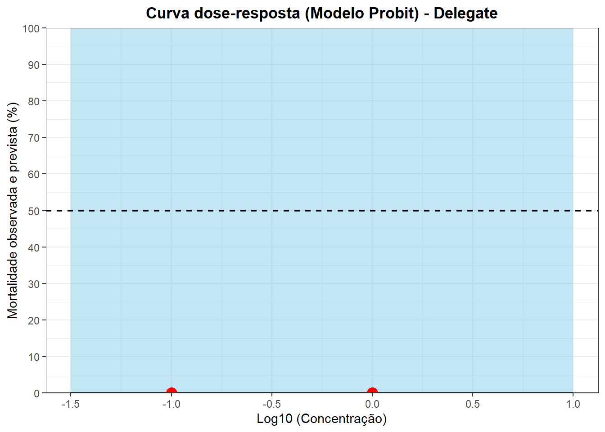
Joiner
dados_jo <- data.frame(
conc = c(0.00375, 0.0075, 0.01, 0.015, 0.03, 0.07, 0.1, 1, 3, 5, 10),
total = c(60, 60, 60, 60, 60, 60, 60, 60, 60, 60, 60),
mortos = c(43, 6, 14, 2, 12, 15, 26, 36, 45, 49, 46)
)
dados_jo$mort_prop_jo <- dados_jo$mortos / dados_jo$total
dados_jo$lconc_jo <- log10(dados_jo$conc)
print("Dados Iniciais:")[1] "Dados Iniciais:"print(dados_jo) conc total mortos mort_prop_jo lconc_jo
1 0.00375 60 43 0.7166667 -2.425969
2 0.00750 60 6 0.1000000 -2.124939
3 0.01000 60 14 0.2333333 -2.000000
4 0.01500 60 2 0.0333333 -1.823909
5 0.03000 60 12 0.2000000 -1.522879
6 0.07000 60 15 0.2500000 -1.154902
7 0.10000 60 26 0.4333333 -1.000000
8 1.00000 60 36 0.6000000 0.000000
9 3.00000 60 45 0.7500000 0.477121
10 5.00000 60 49 0.8166667 0.698970
11 10.00000 60 46 0.7666667 1.000000modelo_reg_jo <- lm(mort_prop_jo ~ lconc_jo, data = dados_jo)
print(anova(modelo_reg_jo))Analysis of Variance Table
Response: mort_prop_jo
Df Sum Sq Mean Sq F value Pr(>F)
lconc_jo 1 0.4404 0.4404 9.357 0.0136 *
Residuals 9 0.4236 0.0471
---
Signif. codes: 0 '***' 0.001 '**' 0.01 '*' 0.05 '.' 0.1 ' ' 1print(summary(modelo_reg_jo))
Call:
lm(formula = mort_prop_jo ~ lconc_jo, data = dados_jo)
Residuals:
Min 1Q Median 3Q Max
-0.2546 -0.1380 -0.0015 0.0380 0.5311
Coefficients:
Estimate Std. Error t value Pr(>|t|)
(Intercept) 0.5981 0.0823 7.27 4.7e-05 ***
lconc_jo 0.1701 0.0556 3.06 0.014 *
---
Signif. codes: 0 '***' 0.001 '**' 0.01 '*' 0.05 '.' 0.1 ' ' 1
Residual standard error: 0.217 on 9 degrees of freedom
Multiple R-squared: 0.51, Adjusted R-squared: 0.455
F-statistic: 9.36 on 1 and 9 DF, p-value: 0.0136modelo_probit_jo <- glm(
cbind(mortos, total - mortos) ~ lconc_jo,
data = dados_jo,
family = binomial(link = "probit")
)
print(summary(modelo_probit_jo))
Call:
glm(formula = cbind(mortos, total - mortos) ~ lconc_jo, family = binomial(link = "probit"),
data = dados_jo)
Coefficients:
Estimate Std. Error z value Pr(>|z|)
(Intercept) 0.2635 0.0647 4.07 4.7e-05 ***
lconc_jo 0.4501 0.0447 10.06 < 2e-16 ***
---
Signif. codes: 0 '***' 0.001 '**' 0.01 '*' 0.05 '.' 0.1 ' ' 1
(Dispersion parameter for binomial family taken to be 1)
Null deviance: 233.58 on 10 degrees of freedom
Residual deviance: 124.18 on 9 degrees of freedom
AIC: 172.9
Number of Fisher Scoring iterations: 4pearson_chisq_jo <- sum(residuals(modelo_probit_jo, type = "pearson")^2)
df_chisq_jo <- nrow(dados_jo) - length(coef(modelo_probit_jo))
p_valor_chisq_jo <- pchisq(pearson_chisq_jo, df = df_chisq_jo, lower.tail = FALSE)
cat(paste("Estatística Qui-quadrado de Pearson:", round(pearson_chisq_jo, 4), "\n"))Estatística Qui-quadrado de Pearson: 138.0422 cat(paste("Graus de Liberdade (DF):", df_chisq_jo, "\n"))Graus de Liberdade (DF): 9 cat(paste("Pr > ChiSq (p-valor):", round(p_valor_chisq_jo, 4), "\n\n"))Pr > ChiSq (p-valor): 0 probabilidades_jo <- c(
seq(from = 0.01, to = 0.10, by = 0.01),
seq(from = 0.15, to = 0.90, by = 0.05),
seq(from = 0.91, to = 0.99, by = 0.01)
)
cl_log_jo <- dose.p(modelo_probit_jo, p = probabilidades_jo)
erros_padrao_log_jo <- attr(cl_log_jo, "SE")
z_valor_jo <- qnorm(0.975)
limite_inf_log_jo <- cl_log_jo - z_valor_jo * erros_padrao_log_jo
limite_sup_log_jo <- cl_log_jo + z_valor_jo * erros_padrao_log_jo
tabela_escala_log10_jo <- data.frame(
Probabilidade = probabilidades_jo,
Log10_conc = cl_log_jo,
Limite_Inferior_95 = limite_inf_log_jo,
Limite_Superior_95 = limite_sup_log_jo
)
tabela_escala_conc_jo <- data.frame(
Probabilidade = probabilidades_jo,
Concentracao = 10^cl_log_jo,
Limite_Inferior_95 = 10^limite_inf_log_jo,
Limite_Superior_95 = 10^limite_sup_log_jo
)
options(digits = 6)
print(tabela_escala_log10_jo) Probabilidade Log10_conc Limite_Inferior_95 Limite_Superior_95
p = 0.01: 0.01 -5.753995 -6.7297193 -4.7782698
p = 0.02: 0.02 -5.148341 -6.0096998 -4.2869818
p = 0.03: 0.03 -4.764073 -5.5534174 -3.9747285
p = 0.04: 0.04 -4.475003 -5.2105449 -3.7394615
p = 0.05: 0.05 -4.239867 -4.9319371 -3.5477974
p = 0.06: 0.06 -4.039730 -4.6950470 -3.3844122
p = 0.07: 0.07 -3.864248 -4.4875630 -3.2409331
p = 0.08: 0.08 -3.707125 -4.3019909 -3.1122596
p = 0.09: 0.09 -3.564228 -4.1334141 -2.9950426
p = 0.10: 0.10 -3.432692 -3.9784252 -2.8869579
p = 0.15: 0.15 -2.888094 -3.3392408 -2.4369471
p = 0.20: 0.20 -2.455265 -2.8355782 -2.0749519
p = 0.25: 0.25 -2.083936 -2.4086452 -1.7592275
p = 0.30: 0.30 -1.750472 -2.0317978 -1.4691457
p = 0.35: 0.35 -1.441467 -1.6910879 -1.1918463
p = 0.40: 0.40 -1.148252 -1.3785425 -0.9179613
p = 0.45: 0.45 -0.864563 -1.0887619 -0.6403636
p = 0.50: 0.50 -0.585371 -0.8166736 -0.3540693
p = 0.55: 0.55 -0.306180 -0.5564770 -0.0558833
p = 0.60: 0.60 -0.022491 -0.3017753 0.2567933
p = 0.65: 0.65 0.270724 -0.0459488 0.5873971
p = 0.70: 0.70 0.579729 0.2180368 0.9414209
p = 0.75: 0.75 0.913193 0.4985814 1.3278055
p = 0.80: 0.80 1.284522 0.8074736 1.7615706
p = 0.85: 0.85 1.717351 1.1644782 2.2702238
p = 0.90: 0.90 2.261949 1.6107074 2.9131898
p = 0.91: 0.91 2.393485 1.7181363 3.0688346
p = 0.92: 0.92 2.536382 1.8347220 3.2380427
p = 0.93: 0.93 2.693505 1.9627845 3.4242258
p = 0.94: 0.94 2.868987 2.1056680 3.6323053
p = 0.95: 0.95 3.069124 2.2684671 3.8697815
p = 0.96: 0.96 3.304260 2.4595460 4.1489745
p = 0.97: 0.97 3.593330 2.6942157 4.4924443
p = 0.98: 0.98 3.977598 3.0058340 4.9493618
p = 0.99: 0.99 4.583252 3.4963811 5.6701222print(tabela_escala_conc_jo) Probabilidade Concentracao Limite_Inferior_95 Limite_Superior_95
p = 0.01: 0.01 1.76200e-06 1.86329e-07 1.66621e-05
p = 0.02: 0.02 7.10656e-06 9.77913e-07 5.16438e-05
p = 0.03: 0.03 1.72158e-05 2.79629e-06 1.05992e-04
p = 0.04: 0.04 3.34963e-05 6.15822e-06 1.82196e-04
p = 0.05: 0.05 5.75616e-05 1.16967e-05 2.83271e-04
p = 0.06: 0.06 9.12579e-05 2.01815e-05 4.12656e-04
p = 0.07: 0.07 1.36695e-04 3.25415e-05 5.74205e-04
p = 0.08: 0.08 1.96279e-04 4.98895e-05 7.72219e-04
p = 0.09: 0.09 2.72754e-04 7.35505e-05 1.01148e-03
p = 0.10: 0.10 3.69240e-04 1.05093e-04 1.29730e-03
p = 0.15: 0.15 1.29392e-03 4.57888e-04 3.65639e-03
p = 0.20: 0.20 3.50538e-03 1.46023e-03 8.41488e-03
p = 0.25: 0.25 8.24259e-03 3.90261e-03 1.74089e-02
p = 0.30: 0.30 1.77635e-02 9.29399e-03 3.39511e-02
p = 0.35: 0.35 3.61854e-02 2.03663e-02 6.42915e-02
p = 0.40: 0.40 7.10801e-02 4.18271e-02 1.20792e-01
p = 0.45: 0.45 1.36596e-01 8.15151e-02 2.28895e-01
p = 0.50: 0.50 2.59794e-01 1.52520e-01 4.42518e-01
p = 0.55: 0.55 4.94106e-01 2.77666e-01 8.79259e-01
p = 0.60: 0.60 9.49531e-01 4.99143e-01 1.80631e+00
p = 0.65: 0.65 1.86519e+00 8.99604e-01 3.86720e+00
p = 0.70: 0.70 3.79952e+00 1.65210e+00 8.73818e+00
p = 0.75: 0.75 8.18829e+00 3.15197e+00 2.12719e+01
p = 0.80: 0.80 1.92541e+01 6.41909e+00 5.77525e+01
p = 0.85: 0.85 5.21616e+01 1.46042e+01 1.86305e+02
p = 0.90: 0.90 1.82788e+02 4.08044e+01 8.18823e+02
p = 0.91: 0.91 2.47449e+02 5.22560e+01 1.17175e+03
p = 0.92: 0.92 3.43861e+02 6.83474e+01 1.72999e+03
p = 0.93: 0.93 4.93748e+02 9.17877e+01 2.65599e+03
p = 0.94: 0.94 7.39583e+02 1.27546e+02 4.28850e+03
p = 0.95: 0.95 1.17253e+03 1.85553e+02 7.40937e+03
p = 0.96: 0.96 2.01493e+03 2.88102e+02 1.40921e+04
p = 0.97: 0.97 3.92040e+03 4.94556e+02 3.10774e+04
p = 0.98: 0.98 9.49725e+03 1.01352e+03 8.89942e+04
p = 0.99: 0.99 3.83047e+04 3.13604e+03 4.67867e+05lconc_grafico_jo <- data.frame(lconc_jo = seq(0, max(dados_jo$lconc_jo) + 0.1, length.out = 200))
predicoes_jo <- predict(modelo_probit_jo, newdata = lconc_grafico_jo, type = "link", se.fit = TRUE)
z_valor_jo <- qnorm(0.975)
lconc_grafico_jo$prob_predita_jo <- pnorm(predicoes_jo$fit)
lconc_grafico_jo$prob_superior_jo <- pnorm(predicoes_jo$fit + z_valor_jo * predicoes_jo$se.fit)
lconc_grafico_jo$prob_inferior_jo <- pnorm(predicoes_jo$fit - z_valor_jo * predicoes_jo$se.fit)
lc50_log_jo <- as.numeric(dose.p(modelo_probit_jo, p = 0.50))
lc50_conc_jo <- 10^lc50_log_jo
x_lim_inferior_jo <- -1.5
x_lim_superior_jo <- 1
lconc_grafico_jo <- data.frame(lconc_jo = seq(x_lim_inferior_jo, x_lim_superior_jo, length.out = 200))
predicoes_jo <- predict(modelo_probit_jo, newdata = lconc_grafico_jo, type = "link", se.fit = TRUE)
z_valor_jo <- qnorm(0.975)
lconc_grafico_jo$prob_predita_jo <- pnorm(predicoes_jo$fit)
lconc_grafico_jo$prob_superior_jo <- pnorm(predicoes_jo$fit + z_valor_jo * predicoes_jo$se.fit)
lconc_grafico_jo$prob_inferior_jo <- pnorm(predicoes_jo$fit - z_valor_jo * predicoes_jo$se.fit)
grafico_probit_final_jo <- ggplot() +
geom_ribbon(data = lconc_grafico_jo,
aes(x = lconc_jo, ymin = prob_inferior_jo * 100, ymax = prob_superior_jo * 100),
fill = "skyblue", alpha = 0.5) +
geom_line(data = lconc_grafico_jo,
aes(x = lconc_jo, y = prob_predita_jo * 100),
color = "blue", size = 1) +
geom_point(data = dados_jo,
aes(x = lconc_jo, y = mort_prop_jo * 100),
color = "red", size = 4) +
geom_hline(yintercept = 50, linetype = "dashed", color = "black", size = 0.7) +
geom_vline(xintercept = lc50_log_jo, linetype = "dashed", color = "black", size = 0.7) +
labs(
title = "Curva dose-resposta (Modelo Probit) - Joiner",
x = "Log10 (Concentração)",
y = "Mortalidade observada e prevista (%)"
) +
annotate("text",
x = lc50_log_jo,
y = 45,
label = paste("LC50 =", format(lc50_conc_jo, digits = 4)),
hjust = -0.1,
vjust = 1,
fontface = "bold",
color = "black") +
scale_y_continuous(limits = c(0, 100), breaks = seq(0, 100, 10), expand = c(0, 0)) +
scale_x_continuous(limits = c(x_lim_inferior_jo, x_lim_superior_jo), breaks = seq(-4, 1, 0.5)) +
theme_bw() +
theme(plot.title = element_text(hjust = 0.5, face = "bold"))
print(grafico_probit_final_jo)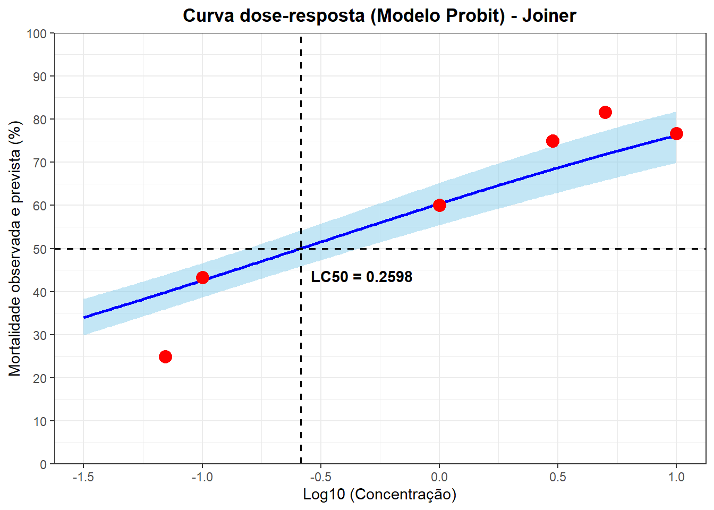
Interpretação da curva dose-resposta: a CL50 corresponde no gráfico do ponto de interseção entre a linha horizontal de referência a 50% da mortalidade dos insetos, e a curva gerada pelo modelo. Foi possível estimar a CL50 apenas para o joiner (CL50 = 0.2598). Isso se deve ao fato de possuir poucos pontos para a estimação do parâmetro.
Conclusão
Considerando os agrupamentos dos tratamentos, de modo geral, a maioria dos inseticidas testados apresentam alta mortalidade contra as lagartas da traça do tomateiro. Diante dos resultados obtidos, observamos a necessidade de complementação dos dados.